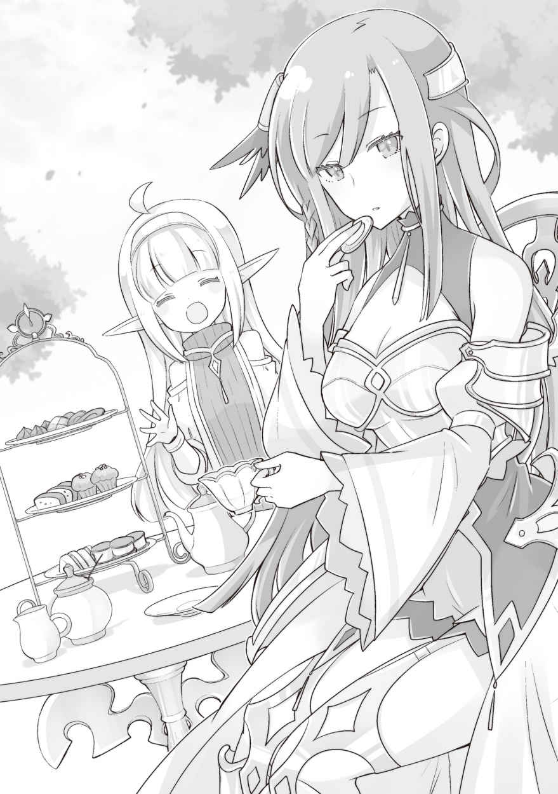
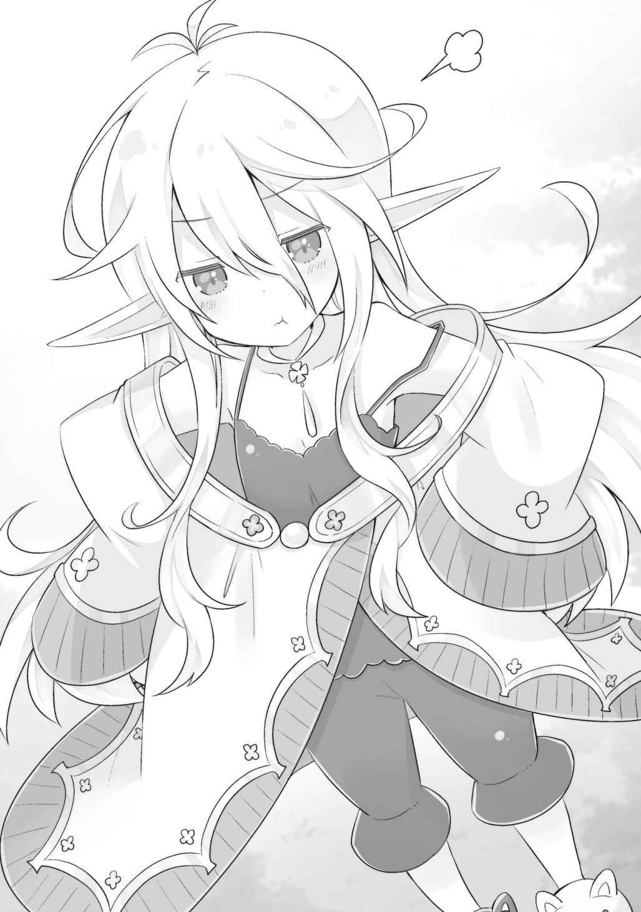
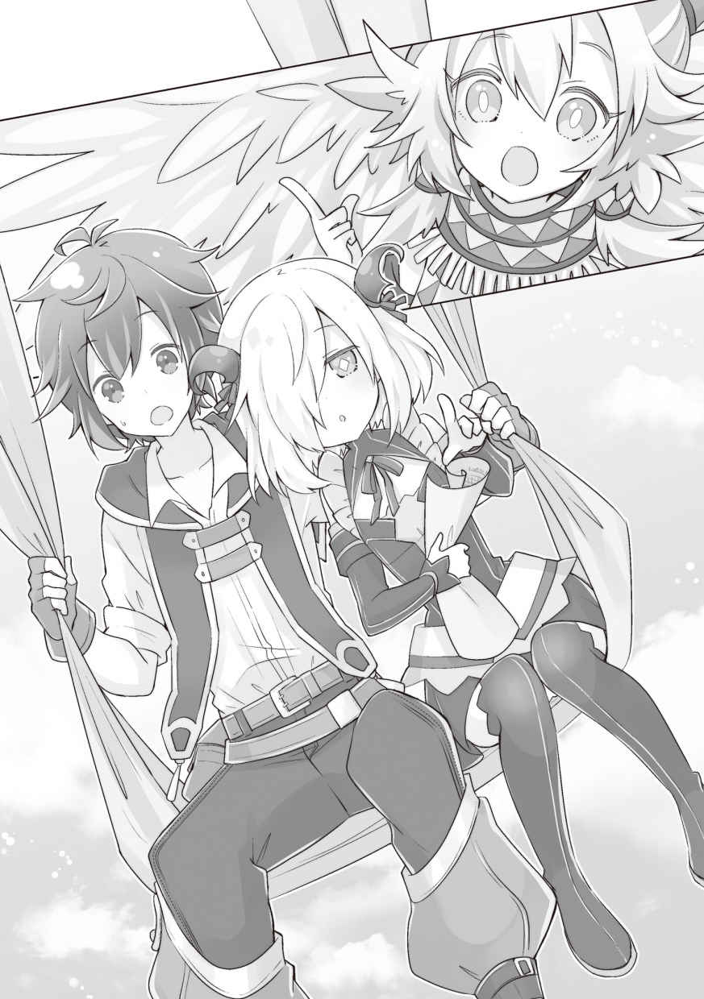

第一章
その日、突風と言ってもいいほどの潮風を浴びながら俺は、海の上にいた。
紆余曲折の末、神殿からルキアを取り戻したばかりだったが、なるべく早く試しておきたいことがあったからだ。
海上は風を遮るものがないから、下手をしたら身体ごと飛ばされてしまいそうな強さの風が吹く。戦士君なら、本当に飛んでいっても不思議ではない。
「じゃあ、こっちの帆を張るぞー！ そっちの縄持ってて」
「オサッ！」
帆の操作のために一緒に搭乗していた戦士君が元気に返事をする。
帆船の帆の操作は複雑だ。風向きによって、帆の向きを変えて望む方向へ進もうというのだから当然である。まだ慣れていないから、頭がだいぶこんがらがるが、上手く帆に風を捕らえると手漕ぎとは比べ物にならない速度が出る。
しかも、この船はライムリーグ帝国海軍のものを失敬した本物の軍船だ。俺がうろ覚え以下の知識で作った船とは、比べ物にならないほどしっかりしている。
「オサオサー！」
「おおー」
斜め後ろからの風を帆に受けて望む方向へ進むことに成功。
風が強いからか、スピードもなかなかのものだ。
ただ、やはり帆船の操作は難しく人手も必要。戦士君たちは力はあるけれど、ロープの操作のような複雑なものはあまり得意ではない。
荒れ狂うような風を受けて奔る船の上で、今後のことを考える。
俺がこの島に連れてこられて三年と少し。
紆余曲折あったが、俺──いや、俺たちは無事にルキアを神殿から奪還し、こちらは半ば余禄のようなものだが、島も国として認めさせることに成功した。
実際には神殿を騙した形ではあるが、書類は本物。
神殿が騙されたことに気付くまでは、しばらく時間がかかるだろう。俺たちは、それまでの間に国として盤石な体制を作ればいい。
元々、見つかればどうなるかわからない身の上。
国として堂々と他国と交易を行い認知されれば、神殿もおいそれと武力行使に及ぶことはできないだろう。他国との交易そのものが、神殿に対してのカウンターパワーになる。
「……ま、あくまで理想論でしかないけど」
神殿に対しての立場は、「俺たちの存在が知られた」のと「神返りで魔女もろとも滅んだと見せかけることに成功した」の二つでイーブンといったところか。
まあ、連中はルキアの「神返り」の影響が島に残っていると思い込んでいるわけで、しばらくは島に近寄らないだろう。それが、半年か一年かはわからないが、それだけあれば国を強固にするには十分だ。
普通なら難しいだろうが、俺の能力があれば不可能ではない。頼りになる仲間だってたくさんいる。
とはいえ、足りないものも多いのだが、それはそれだ。最善を尽くすしかない。
「……最善、か」
船に揺られながら、ひとり呟く。
俺は先日、ビーエと話した時のことを思い出していた。
……
…………
………………
「どうせ、近いうちにこの世界は滅びる。その運命から逃れる術はないからですよ」
ビーエは表情を変えずに、静かにそう言った。
なぜ、自分たちにとって不利な事実も隠さず真実を喋ったのか。
問い詰めた俺に対しての返答だ。
「世界が……？ 嘘だろ……」
つい、そう口に出してしまったが、嘘のはずがない。
なぜなら、ビーエはずっと真実だけを喋っていたのだから。
「こんな嘘をつく必要はないと、あなたならわかるはずでしょう」
「どうだろうな……。俺たちがそれを真に受けて、自暴自棄になってお前を解放するのを期待しているのかも」
「そんな回りくどいことはしませんよ」
この男は、世界最大の宗教団体であるファーレー教で、たった一人の特級審問官。
そして、未来が見えるという「運命の神」の祝福者である。
ならばやはり真実なのか……。
「滅びるったって、どういう風に滅びるんだ？ 神の怒りに触れて、人類に裁きでも下るのか。それとも単純に天変地異か、デカい戦争でも起こるのか」
アラミラが本当に「神」なのかどうかは知らないが、「神」の如き存在であるのは間違いないだろう。だとすれば、何が起こってもおかしくない。
例えば、世界の滅びを望むアラミラの祝福者が現れれば、この世界が滅びるのは簡単なことのような気もする。
「世界中の空気を無くす能力」でも、「巨大隕石を落とす能力」でも、「太陽を破壊する能力」でもいい。
人類を滅ぼすことそのものは、けっこう単純な力で可能なのだ。
全世界へ波及するアーサーの能力のほうが、よほど複雑で規模が大きい。
そして、アラミラがそういう危険思想を持った者に力を与えないとは限らない。
戦争で世界が滅ぶというより、より現実的に思える。
一瞬でいろんな可能性が脳裏に浮かんだが、ビーエの答えに俺は肩透かしを食らった。
「わかりません。どういう風に滅びるかまでは」
「はぁ？ ずいぶん曖昧なんだな。時期は？」
「時期も……近いうちとしか」
「近いったって、いろいろあるだろう。一年以内ぐらいか？」
「私が、その未来を見てから、もう数年経ちます。ですが、まだ滅びの兆候は見られない……あるいは、あなたが世界を滅ぼすんですか？」
「そんなわけあるかよ」
雲を掴むような話だ。
つまり「滅亡」という決定的な未来だけが見えていて、時期や理由はさっぱりわからないということ。
対策のしようがないのに、確定した未来だけ見えてるのはキツいだろう。やさぐれる気持ちもわからなくもない。
とはいえ、ビーエのこの予言は、どうでもいいといえばどうでもいい話だ。
対策の打ちようがないし、時期がわからないんじゃ、それこそ「あなたはいずれ死にます！」と宣言されたのと等しい。
そりゃ、人はいつか死ぬ。だが、そんなのは予言されるまでもなく、最初から──それこそ生まれた瞬間から、確定していることなのだ。
「……驚かないんですね」
「いや、驚いてはいるよ。でも滅びるのは『世界』なんだろ？ 全員死ぬんなら、まあもう仕方ないとしか言いようがないんじゃないか」
「普通は、そんな反応しませんよ……」
俺は一度死んでいる。前世で「長くは生きられない」と宣告されて、徐々に弱っていき、そして死んだ。そういう経験があるから「いずれ死にますよ」という状態に慣れている可能性はある。
いや、もちろん死にたくはないのだが、衝撃を受けるほどでもないというか……。
前世でも、世界が滅びるなんて話は何度か聞いたし、本当に滅びるとしても「その時」が来てから考える以外にない。
「じゃあ、せめてお前はその未来の『時期』と、なによりも『理由』がわかるように、能力を研鑽してくれ。理由さえわかれば対策が打てるし、もしかすれば回避できる可能性だってあるんだろう」
「前向きなんですね」
「そうかもな。まあ未来がどうであろうと、精一杯生きる以外ないだろ」
俺がそう答えると、ビーエは驚いたような顔をした。
「……あなたのように心が強ければよかったんですけどね。私は、その未来を受け止めるには心が弱すぎた。どうして、そんなに強くなれるんですか？」
強く……か。強くなければ、この島に捨てられて生き抜くことなどできなかっただろう。
いつか世界が滅びるというのならば、その時まで精一杯生きる。
胸を張って、今を楽しむ。俺にできるのはそれだけだ。
前世では、なにもできなかった分、今生では楽しいことをたくさんすると決めたのだ。
たかが、未来の予言如きでそれを諦めるなんて選択肢はない。
「やっぱり一回死ぬことだよ。一度死ねば、生きていることの価値がわかるさ」
俺は冗談めかして答えて、部屋を出た。
………………
…………
……
「滅びの未来を見てしまうなんて、未来を見る能力者はハズレ枠だよなぁ……」
俺も前世ならば未来視に一定の憧れを持ったのかもしれないが、今となってはいらない能力という気がしてならない。
良い未来ならばともかく、悪い未来を見てしまった場合、絶望しかないからだ。
逆に未来を自分で切り開いていくのならば、能力なんてなくても「良い未来」を見ることはできる。
まあ、宝くじの当選番号がわかるとか、そういう細かいものが見える能力であるならまだ良い。だが、ビーエのは漠然とした未来がわかるだけのようなので、無駄に不安を煽るだけの微妙な能力だ。
「……ただ、まあ。せっかくの情報ではある」
どういう風に滅びるのかはわからないが、戦争や祝福者由来のものなら、対処したり、あるいは先送りにしたりできるのかもしれない。
世界単位となれば、自分にできることは限られているのだろうが、一応頭に留めておくことにしよう。
とりあえず、世界が滅びるという話は、俺と、一緒に聞いていたレンだけの秘密にする。みんながそれを知る必要はないし、知ったところでマイナスでしかない。
ビーエにもしっかり口止めをしておかなければ。
「……おーい、そろそろいったん帆を畳んで帰るぞー」
俺は戦士君たちに指示を出した。
戦士君たちが、手分けをして帆を畳んでいく。やはりロープを外したり結んだりするのは苦手らしく、俺も一緒に作業をした。
その後、甲板の下に降り、オールを漕いで島へと戻る。
この軍船は、帆船でありながら、何十本もの櫂を使って進むこともできる方式なのだ。
それほど沖には出ていないから、戦士君たちの帰巣本能で島まで戻れるだろう。
ちなみに、今日、船で外に出たのは帆船での航行の練習のためだったのだが、やはり知識なしでは難しかった。
風が吹いている方向に向かって進むのならともかく、横向きの風や、向かい風に向かって進むのは、かなり複雑な帆の操作が必要だし、今日のように風が強い日ならいいが、そうでない日は漂流みたいな状況になるだろう。
いずれは習得すべき技術なのかもしれないが、一隻や二隻運用するだけなら、戦士君のパワーで進むスタイルか、風魔法を帆に受けて進むスタイルで十分だ。
最強は、やはりカエデの能力で命を与える方法である。
特に、カエデの力を使った船は前世の高速船と比べても遜色ない速度が出せる上に、燃料もいらないという、まさしくチート級の代物。
あれを一度味わってしまうと、帆や櫂で進む船は遅く感じて仕方がない。
「ま、船に関しては外の技術……いや、商人を入れるしかないだろうな」
この島を国にするならば、船は必須となるが、さしあたりは俺の能力とカエデの能力の二枚看板で乗り切って、船をたくさん持っている大商人と契約するなりして国を認知させていく方向でいくのがいいだろう。こちらから売り込みに行くというより、向こうから来てもらうようにするわけだ。
それに船だけでなく、人も足りてない。
これからこの島をどういう国にしていきたいかも含めて、早めに決めていかなければ。
◇◆◆◆◇
「あー！ お兄ちゃん、やっと帰ってきた！」
船を南の入り江に着けると、桟橋のところでルキアとアビスが待っていた。
昨晩はルキアにせがまれて一緒に寝たのだが、朝、安心しきった顔で寝ていたので起こすのが可哀想になり、そのまま出てきたのだ。
俺が船でちょっと外に出ることは、サラに言ってあったので、ルキアは起きてから探し回ったか、サラを捕まえて訊き出したかしたのだろう。アビスは途中で合流したのかな？
俺は船を手早く開拓村へ収納した。外に出しておくと傷むので、使う時だけ出すようにしているのだ。今、島にあるマトモな船はこの軍船一隻なので、大切に扱わねば。
「お兄ちゃん！ どっか行くなら私も連れてってって言ってあったのに！」
「いや、ちょっとしたテストで外に出てただけだからさ。危険もあったし」
自分と戦士君だけで帆船の航行ができるのか試しておきたかったのだ。さすがに沈没はないだろうが、船上ではなにがあるかわからない。
そういうわけで、一人で行ったのだが、
「……マスタ。危険があるなら、なおさら私も連れてって欲しい」
アビスにも注意──いや、お願いされてしまった。
まあ、確かにアビスは連れて行っても良かったかもしれない。
「了解。まあ、とりあえずテストは済んだから。やっぱ、帆船は難しいよ。ちゃんとした水夫を雇ったほうが早そうだ」
「オサオサ」
横にいた戦士君たちも肯き同意を示す。
パワフルな戦士君たちはオール漕ぎに関しては百人力だが、やはりロープワークが苦手なのだ。ていうか、俺もまだうろ覚えだ。結び方の種類も多いしな。
「お兄ちゃん、ごはんは？」
ルキアが俺の左腕にしがみつきながら訊いてくる。
「そういえば、まだだな」
「ちゃんと食べなきゃダメだよ、マスタ」
ルキアの真似なのか、アビスが右腕にしがみつく。両手に花状態だ。
その様子をルキアが半眼で見つめていた。視線を感じたのか、アビスも特に表情を変えずに見つめ返した。
「ルキア？ どうした？」
「……アビスさんって、お兄ちゃんのことどう思ってるんです？」
いきなりルキアは、そんなことを訊いた。
「……マスタのこと？ 誰よりも大切な人」
「好きってことですか？ 男性として？」
「……うん」
はっきりと言い切るアビス。
えっ？ あれ？ アビスって俺のことそういう風に思ってたの？
……いや、質問の意味がわかってないだけだろうな、きっと。
「お兄ちゃんは、アビスさんのことどう思っているの？」
「どうって、そりゃ好きだよ。まあ、アビスのことに関しては、ちょっと説明が必要かもしれないけど」
ルキアには、アビスのことを簡単には説明してある。
だが、千年前の人造人間だとは、まだちゃんと説明していないのだ。
「……こんな、ちっちゃい子が趣味なんですか？」
そう。ちゃんと説明してないから、こうなる。
今のアビスは、通常モードだから子どもの姿なのだ。好きは好きだが、そういう意味に取られると困る。
「……私、ちっちゃくないよ？ ほら」
アビスはそう言うが早いか、子どもモードから大人モードに身体を変化させた。
大人モードのアビスは、一口で言うと、とてもグラマラスだ。子どもモードの時とのギャップが凄い。
言葉を失い目を白黒させるルキア。
「ちっちゃくないでしょう？」
少し挑発的に俺の右腕に身体を押し付けながら、そんなことを言う。
確かに小さくない。むしろ大きい。いや、どこがって話じゃなく。
「ぐ……ぐぬぬ……。負けた……」
「いやいやいや。普通、アビスが大きくなったことに驚かないか？」
「あ、ええ。それ自体は知っていましたから」
「見たことあったっけ？」
ルキアがこの島に来てからまだ数日しか経っていないが、どこかで見たのだろう。
それか、セレスティアルにも子どもモードがあって、それを見ていたのかもしれない。
いずれにせよ、アビスのことはルキアに知っておいて欲しかったので、村への道すがら、俺とアビスとの出会いから今までのことを話した。
「アビスさん。兄を守ってくれて、ありがとうございます」
すべてを話し終えた後、ルキアは改まってアビスに頭を下げた。
「もしアビスさんがいなかったら、兄は死んでいた。そしたら、私も生きる意味を失っていたと思います。だから、アビスさんは兄にとっても、私にとっても命の恩人です」
「……それは私だって同じだよ？ マスタに会えなければ、私は死んでいるのと同じだった。マスタが私に命をくれたんだ」
「じゃあ、私たち仲間ですね」
ルキアがアビスの手を握り笑い合う。
ルキアは、神殿の内部にいたから、ファーレー教の悪魔の見た目をしているアビスと仲良くなれるか心配だったのだが、どうやら杞憂だったようだ。
その後、俺はルキアを正式にみんなに紹介した。主要メンバーには紹介してあったが、近衛隊や鳥人たちへの紹介はまだだったのだ。
ルキアは大神殿にいたからか、俺の置かれた状況に妙に詳しく、あまり多くを説明してないのに、すぐに状況を飲み込み、みんなと仲良くなるのも早かった。
俺と違ってルキアは社交的だし、特に心配はいらないようだ。
「あ、そうだルキア、ちょっといいか」
ルキアの紹介を兼ねた昼食会を終えてから、俺はルキアを呼び出した。
「兄さん、どうしました？」
キリっとした様子でやってくるルキア。どうやら、人が大勢いる時と二人でいる時とで、態度を変えているらしい。大人ぶりたいお年頃なのかも。
「お前の友達が神殿の謀略で島に連れて来られてるって話したろ。どうすべきか決めたから、会いにいくぞ」
「そういえばクレアとイブが来ているんでしたね」
「ずいぶん軽いな。友達じゃないのか？」
「友達ですけど……ちょっと困るな、と……。だって、帰すわけにもいかないでしょう？」
「まあ、そうだな」
現在、俺たちは神殿から「全員滅んだ」と考えられている。
だから、死んだはずの人間を帰すということは、せっかく欺いているのに「滅んでないですよ」と知らせてしまうことになる。
だから、せめてもうしばらくは、クレアもイブも島にいてもらうか、そうでないならどこかの土地で祝福者であることを伏せて暮らしてもらうしかない。
「とにかく会ってみてくれ。ルキアの友達だっていう話も、あくまで彼女らの自称だからな。もしかしたら、全然知らない人という可能性もゼロじゃないだろう」
軟禁している家は、わざわざ軟禁用に作ってあったもので、今はクレアとイブとマリエラが三人で暮らしている。
外には出ないように戦士君たちが見張っているが、家の中では自由にさせているし、食事もちゃんとしたものを運んでいるから、健康面では問題ないだろう。
玄関扉をノックすると、すぐに返事があった。
「はいはーい。大絶賛監禁中のマリエラ様になんの御用ですかァ～？」
中から出てきたのはマリエラだった。
服も神官服でなく、こちらが支給したラフな普段着だ。
「お前は本当にブレないな」
「なんだ、あんたか。……って、ルキア・ハスクバーナ！ あんたね────！」
俺の後ろにいたルキアを見つけて、即詰め寄るマリエラ。
「あんたが、あの時『時止め』を自分にかけたから、私はこんなことになったのよ！ どうしてくれんのよ！ 私の人生滅茶苦茶じゃない！」
「ごっ、ごめんなさい」
マリエラの剣幕に、反射的に謝るルキア。
「それがなくても、こいつの人生は滅茶苦茶だったと思うぞ、ルキア」
「うっさい！ 元々あんたが元凶なのよ！」
「まず自分の非を認めるところからスタートしたほうがいいぞ……お前は」
マリエラが騒ぐ声が響いたからか、部屋からクレアとイブが顔を出した。
「どうしたんですか？ ……あっ、ルキア様！」
「……ほんとだ、ルキア様だ。じゃあ、その人がお兄さんだっていうの本当だったの？」
「クレア！ イブ！ 久しぶりね。元気にしてた？ ……ってのも変ね。私のせいで、変なことに巻き込ませちゃったわね」
「ルキア様は被害者じゃないですか！ 私たち、神殿がこんな組織だって知らなくて……お兄さんがなんとかしてくれなかったら、殺されてたんでしょう？」
「ん？ そのへん、詳しく話してなかったはずだけど……」
いろいろやることが多くて、正直クレアとイブについては、後回しにしていたのだ。
全然、状況がわからないまま部屋に閉じ込められていたはずだが……。
「……うるさいから私が全部説明しといたのよ。まったく、なんで私があんたの擁護みたいなことしなきゃならないんだか」
プイっと横を向くマリエラ。
なるほど、こいつは神殿の筋書きを全部知っているから、説明可能だったか。
自分に有利な説明をしてもよさそうなものだが、それはしなかったらしい。
「……それで、私たちどうなるんですか？」
ひとしきりルキアとの再会を喜んだあと、イブがおずおずと言った。
ここはしっかり説明しておいてあげないと。
「しばらくは島にいてもらうしかないと思う。神殿にもし見つかったら、どうなるかわからない……というか、好ましいことにはならないだろう。どうしても帰りたい理由があるなら、こちらも善処するけど」
人の事情はそれぞれだ。俺が、どうしたって妹を助けたいと思ったように、このクレアとイブにだって、どうしても家に戻りたい事情がないとも限らない。
「い、いえ。私たちも、無理に戻る必要はないって話し合ってたんです。神殿からお金を借りてたけど、死んだことになってるなら、もう返す必要もないんでしょうし……」
「イブも同じ。だから、お兄さん。私たちのことお願いするよ」
二人が頭を下げてくる。この二人は、それぞれ「癒し」「盾」の神官である。
二人がいてくれるのは、こちらとしても助かる。特に「癒し」の神官は貴重だ。
「まあ、神殿とのことも、ずっとこのままじゃないから。ほとぼりが冷めたら家族に会いに行くくらいはできるようにするつもり」
俺がそう言うと、二人はホッとしたような顔をした。さすがに、家族に死んだと思われたままなのは、心苦しいのだろう。
「ん、じゃあもう、クレアとイブは好きに行動していいよ。家はこのまま、ここに住んでもらっていいから。大浴場の使い方とかはまた人をやるから、教わって」
島のこと、知っておいたほうがいいことも多い。大食堂のことや、大浴場のこと。まだまだ、個人単位で完結できる生活はできない。共同体としての生活だ。
まあ、そのへんはおいおい覚えていってくれればいいだろう。
「ねえ！ 私は？ 私も自由に行動していいんでしょう？」
「マリエラか……。ま、いいよ」
「やったぜ！」
ガッツポーズを作るマリエラ。こいつは、本当にテンションが高いな。
「ただし、見張りの戦士君を二体付ける。戦士君たち、いいかな」
「オサ！」「オサオサー！」
この家の見張りをしてくれていた戦士君にそのまま、マリエラの見張りを頼む。
「もし、マリエラが誰かに術を使ったら、頭かち割っていいから」
「オサオサ！」「オッササー！」
戦士君がビシッと敬礼し、どこからともなく石斧を取り出した。
「ちょちょちょ、ちょっと！ 無条件で解放してくれるんじゃないの？」
「条件付きに決まってるだろ。ただ、変なことしなけりゃ問題ないよ。戦士君たちと仲良くしてくれ」
「うーん、いったいなんなのこいつら……」
「オ、オサ～」
戦士君のほっぺたをムニムニしたり、髪を引っ張ったりするマリエラ。確かに、説明なしでは謎生命体としか言いようがない……。まあ、いずれ教えてやればいいか。
「ねえ、お兄ちゃん」
「ん、どうしたー？」
「クレアとイブに話してたけど……家族のこと。……私たちだって、そうだよね？」
うつむき加減で表情は見えないが、ルキアが言いたいことはわかっていた。
俺が島に捨てられて、最初は自分のことで精一杯だった。
次にルキアが危機的な状況にあると知って、助けた。
なら、次はどうするべきか──そういう話だ。
「……一度、無事を伝えに行かなきゃな」
「うん。パパ、お兄ちゃんは行方不明と思ってるだろうけど、私のことはどう伝わってるかわかんないし」
ルキアのことを神殿がどう親父に説明したかは謎だ。
ローザのように「お役目」で戻れないと伝えたのか、それとも──殉教したと伝えたのか。
「どっちにしても、元気な顔を見せて安心させたいな」
俺とルキアは、親父には返しても返しきれない恩がある。
捨てられていた俺とルキアを拾って育ててくれたのは、他ならない親父なのだから。
「親父を島に連れてきて、また家族そろって暮らしてもいいしな。俺が国王になったなんて知ったら、腰を抜かすぞ、きっと」
「あはは、そうだね。……でもパパ、実際は泣き崩れると思うなぁ」
「そうだな……」
親父は、けっこう涙もろいところがあり、頼りないけど優しい男だ。奥さんに先立たれて、一人で大変な身の上なのに、俺たち二人を拾って実の子として育ててくれた。
今ならもう家の場所もわかる。
島のことが一段落したら、会いに行こう。
◇◆◆◆◇
「てのひら開拓村！」
ルキアと別れてから、俺は一人で開拓村へと移動した。
開拓村の入り口の立て看板は、現在の開拓村のレベルや村の状況なんかが、ゲームの画面のように記されている。
「なになに……。あ、レベル上がってる」
──────────────────────
☆☆☆ てのひら開拓村 ☆☆☆
現在のレベルは 41 です。
村の名前は『ハスクバーナ村』です。
開拓度は『中堅交易拠点村』です。
ＮＥＸＴ ＬＥＶＥＬ ：「総人口１４００人」を達成
──────────────────────
レベル40になってから、ルキアの件でゴタゴタしていたが、レベルアップの条件だった「移住者の受け入れ」を達成したことで、また通常のレベルアップ条件へと戻っている。
移住とは文字通り、「開拓村」へ、いや開拓村がある「世界」へ移り住むということだ。移住者は開拓村だけでなく、村の出口から外の世界へと旅立つこともできるらしい。
俺も開拓村の外がどうなっているのか、果たして他の国があるのか、どれほどの広さがあるのか、どんな人たちがどんな暮らしをしているのか、ほとんどのことを知らない。
自分自身が移住するわけにはいかないから、調べようがないのだ。
「それで、エネル。ずいぶん仲良くなったみたいだな」
「まーねー。やっぱり私ってコミュ力が違うから」
ふふーんと鼻を高くするエネル。屋敷の外にソファとテーブルを持ち出して、四人でお茶を楽しんでいたところのようだ。
エネル、コロモ、シエルの三姉妹。そして、村に移住した「聖女」である。
聖女は、俺たちが暮らしている島に封印されていた若い女性で、名前はまだ聞いていない。聖女というのは、彼女が封印される前の呼称で、なんでも自分の「祝福の能力」を他人に分け与えていたことから、そう呼ばれるようになったのだとか。
しかし、それによって神殿から危険視され魔女と認定、封印されたのだという。
聖女は、綺麗なスミレ色の髪を背中まで垂らした美女で、物憂げな表情はなるほど聖女とも魔女ともとれるミステリアスさだ。
俺の突然の登場にも彼女は驚いた様子を見せず、茶菓子なんて摘んじゃって、まるで我が家のようにくつろいでいる。
「お久しぶりです。ここでの生活はどうですか？」
「お久しぶりってほど、経ってないけど……そうね、エネルさんも、コロモさんも、シエルさんも、私が知らないことをたくさん知ってて、話をしていて飽きないわ。それに、ここでは何の力もない一人の人間でいられるから、居心地がいいみたい。ありがとね、連れてきてくれて」
朗らかに笑う聖女。
封印を解かれたばかりの時は、かなり怖いイメージだったが、今はまるで憑き物が取れたかのようだ。
「いえいえ、こちらの都合で連れてきてしまったので、そう言っていただけると助かりますよ。ところで、まだ名前を訊いていませんでした。教えていただいても？」
「ん。私のことは、ステイシーと呼んで。それ以外の名前は捨てたから」
あだ名か何かなのだろうか。まあ、別に名前はなんだっていい。
「ステイシーさんですね。こないだはちゃんと挨拶もしていませんでしたが、これからよろしくお願いします」
俺は頭を下げて、ステイシーの向かいに座った。コロモがお茶を淹れてくれたので、それを一口飲むと、ステイシーが口を開いた。
「カイはアラミラの使徒なのよね？」
彼女はケロっとその名を口にした。神殿がアラミラを禁忌指定したのは、かなり昔からという話だが、彼女の時代である七百年前はまだ、普通にアラミラの名前が知れわたっていたということなのだろうか。
……いや、そうではなく魔女騒動を機にアラミラを禁忌指定にしたのか。
しかも、祝福者ではなく「使徒」呼びだ。
「そうですね。隠しても仕方ありませんから言いますが、この場所がまるごと僕の能力ということになります」
「不思議な能力ね。私もそれなりの数、アラミラの使徒を見てきたけど、こんなすごい能力は初めて。あ、私の能力のことは知ってるんだっけ？」
「詳しくは知らないですね」
「まあ、別に大した力ではないのよ。私の能力名は『完全なる模倣』。能力を真似して自分のものにする力ね」
スキルをコピーする力。前に聞いていた通りだ。実際、封印を解かれた日、ステイシーは何種類もの能力を同時に使っている。
「確か、能力を分け与えることもできるって聞きましたけど」
「そうね。移譲もできる。でも、それをすると私からはその能力が失われちゃうから。ファーレーの神官から模倣した力だけしか、与えたことないわ」
つまり、ファーレーの神官以外からもコピーできる──アラミラの能力のコピーまで可能──ということだ。どれだけの能力を身体の中にため込んでいるのか知らないが、魔女だの聖女だのと言われるだけのことはある。
「能力はあくまで模倣なんですよね？ 奪うわけではなく」
「奪う能力だったら、神殿も封印なんて手段を取らずに、私を殺していたでしょうね。だから、安心して？ もし、あなたの能力を借りるとしても、あくまで真似するだけだから」
「まあ、僕の能力の場合、模倣しても旨味ないですし問題ありませんけどね……」
能力は鍛えることで強くなる。ステイシーのスキルコピーも、強化された状態をコピーするわけではないだろう。
てのひら開拓村は、最初は地平線まで続く草原しか存在しない。

もし手に入れたとしても、一から育てるのは楽ではないはずだ。
それに、万が一コピーされたとしても、ステイシーがあの草原を育てたら、どういう風に育っていくのか興味がある。エネルたちのような管理人が登場するのだろうか？
「私は望まない相手からは、模倣しないから大丈夫よ？」
「そうなんですか？」
「ええ。たくさんの力を持っているといっても、長く生きているから、その産物というだけ。アラミラの使徒の力なんて、それこそ十年に一回借りられればいいほうだったもの」
てか、またこの人も長生き系の人なのか。
長生きな人多いな。まあ、ファーレーの祝福はほとんど全部持ってるんだろうから、当然、時止めなんかも可能なんだろう。あるいは、別の長寿系の力を持っているのか。
「ま、しばらくはここでエネルさんたちと遊ばせてもらうわ～。もう、いまさら神殿と敵対するような活動する気力も残ってないし。……歳のせいかしらね」
「そもそも、どうして聖女と呼ばれていたんです？」
ステイシーは魔女なのか聖女なのか。
いずれにせよ、神殿に封印されたということだけが事実で、詳しい経緯は知らない。
なにせ七百年も前のことで、ローザですら生まれる前のことなのだ。
「神殿は神から授かった力で、高額なお布施を受け取り、その見返りとして力を行使していたわ。お金がなくて、お布施ができず病に倒れる人がたくさんいた……。だから、私は神殿には属さずにそういう人たちを助けていたの」
「それで神殿に目を付けられた……と」
「そういうことね。彼らは自分たちの思い通りの世界を作ろうとしていた。決して自らのものではない力を利用してね。元々の魔法文明を滅ぼしただけでは飽き足らず……」
彼女は、アビスたちがいた魔法文明から、今の一部の才能ある人間だけが魔法を扱う時代への変革期を生きた人間なのだ。
魔法文明がどういうものだったのか、俺にはいまいち想像ができないが、かなり便利な世界だっただろうとは想像が付く。
「その話、僕も聞いてはいましたが、しかしファーレー教だけで、文明をここまで後退させることなんてできるんですかね」
「奴らは、魔法と神の力、その二つを巧みに使ったのよ。魔法と神の力を使う相手と、魔法だけの相手……。しかも、ファーレー教の狙いは魔力安定化装置だった。安定化装置が壊されたら、魔法は使えなくなる。そうなったら、もう白兵戦しかない。神の名の下に襲い掛かってくる狂信者に敵うわけないわ」
「なるほど」
まあ、実際どういう世界で、どういう風な戦いがあったのか厳密にはわからないから、何とも言えない部分はあるにせよ、かなりひどい戦いであったのは確かなのだろう。
ステイシーによると、神殿の前身組織であるアラドーラは、今でいうところの貴族……つまり「魔法才能者」の復権を約束し、仲間に引き入れていたらしい。
魔力安定化装置が破壊された世界では、魔法を使える人間は限られる。そんな中で、戦いが始まればどうなるか。前世なら、火薬がなくなった世界で、戦いの片側だけが火薬を使える──そういう状況が近いだろう。戦いになるはずがない。一方的な殺戮だ。
なるほど、神殿が勝つのも当然であるのかもしれない。
「あなたは神殿に恨みがあるんじゃないんですか？」
俺はそう訊いた。ステイシーが聖女のような活動を始めた動機はよくわからないが、何百年も封印されていたのは事実なのだ。
「ん、まあ……ちょっと複雑でね。恨みといえば……恨みだけど、もういいかなって気持ちもあるんだ。また、私がなにかしたって、世界を混乱させるだけみたいだし……。なにより、もう疲れちゃったみたい」
そう言って、ステイシーはひらひらと手を振った。
すべてを達観した仙女のような表情で微笑む。その微笑みは、同じく神殿に人生を翻弄されたアーサーのものとよく似ていた。
彼女もまた神殿の被害者なのだろうか？
こうして話している限り、彼女に邪悪なものは感じない。
だが、一方だけの話を聞いて、すべてを判断するわけにはいかない。俺は彼女のことを知らなすぎるし、神殿が膨大な犠牲を払って彼女を封印し続けていたことは事実なのだ。
俺は神殿が常に一〇〇％悪い組織だとは思っていない。
悪い部分もあれば、良い部分もある。
今となっては、必要な組織であるというのも否定できない。
だから、神殿が彼女を封印した本当の理由を知る必要がある。彼女が言うように、聖女として力を分け与えることで、神殿による「統治」を乱すという理由で封印されたのか、それとも他に理由があるのか──
それを知るまでは、彼女をこの世界から出すわけにはいかない。
「エネルは、ステイシーさんにどこまで話したんだ？」
エネルに話を振る。
彼女たちが話し相手になっていたようだし、世間話で俺のことや神殿のことなんかも話したのだろうか。別に話されて困るわけではないが、ステイシーさんが七百年前になにをしたのか、確認しようがない。だから、嘘をつかれてもわからない。
もしかすると、人畜無害な感じを出しているが、外に出たら悪さをする可能性もある。
「まあ当たり障りのないことだけだね。島で暮らしてるってこととか、七百年も封印されてたらしいとかさ。私だって、そっちの世界のこと詳しいわけじゃないし。だから細かいことは、カイから話してあげて」
「ステイシーさん、なにか知りたいことあります？」
俺がそう訊くと、ステイシーはあごに手をやって考え、そして言った。
「……そもそも、カイたちは神殿とはどういう関係？ この七百年で神殿はどういう組織になったのかしら。そのあたりがよくわからないのよね」
そこからか。いやまあ、出会った時なんて一言二言しか喋ってないのだし、当然か。
「ええと、まず神殿とは敵対関係です。現在は、まあ一種の膠着状態まで持って行った感じではありますが……神殿がどういう組織なのかは、七百年前の状態がどうなのか知らないので、一口では言えませんが、大きい組織ですよ。世界最大といっていい」
神殿について掻い摘んで説明すると、ステイシーは「なら、私のころと同じか」と小さく呟いた。
まあ、前文明が破壊されたのがだいたい千年前だというから、その三百年後にはほどほど今のスタイルが完成していたとしても不思議ではないだろう。
「とにかく、カイたちは神殿の手先ではないのね？」
「そうですね。あれだけ大きい組織ですし、積極的に敵対するつもりもありませんが」
「そっか。ここだと能力が使えないから、嘘か本当か判断できないけど……信じる」
どうやらステイシーと神殿との確執は、かなり大きいようだ。まあ、あれだけ大規模な封印が施されていたのだから、当然といえば当然なのかもしれないが……。
「ところで、その嘘を見破る力って、アラミラの能力の一つなんですか？」
俺は気になっていたことを訊ねてみた。
彼女が封印を解かれた時、開拓村に騙し討ちのように連れてくるまでに、何個かの謎の能力を見たのだ。嘘を見破る力も、そのうちの一つだ。
「そうよ。あんまり良い能力じゃないから、滅多に使わないんだけどね」
「他にも、空を飛んだり、瞬間移動したりしてましたけど」
「空を飛ぶのは祝福よ。瞬間移動はアラミラの能力ね」
淡々と答えるステイシーだが、神殿が危険視するのもわかるような気がする。一つだけでも破格の能力であるアラミラの力を、彼女はいくつも持っているのだ。
「空を飛ぶ祝福なんてあったんですね。知りませんでした」
「重力の神『サルース』の能力よ。正直あんまり使い道ない能力だから、私も最後まで持ってたんだけど。他にも私が持っている力……教えてあげようか？」
「おっ、いいんですか？」
つい食いつくと、ステイシーはなぜか脚を組みなおし、蠱惑的な笑みを浮かべた。
「ふふ……またいずれね」
「ええっ」
「知りたければ、ちょくちょく訪れて好感度を上げなさい」
「なんでそんな──ゲームみたいなことを──」
俺がそう言いかけた瞬間、シエルがスッと顔をそむけた。
「シエル────？」
「……なに？ なんでもないから。ステイシーにギャルゲーなんてやらせてないから」
真顔で下手な嘘をつくシエル。てか、ずっと開拓村にいたら暇だし、そりゃゲームはやりますよねって話だ。
「そう。あのゲームってやつ……滅茶苦茶面白いよ。ああいう、男女の駆け引き……？ っていうのかな。私、そういうの無縁だったのよね」
ま、まあ……楽しんでいただけているのなら、俺としても安心できるけれど。
「というわけで私しばらく出るつもりないから」
「……ステイシー完全にハマってる。ちなみに、今もゲームやりすぎで、外で休憩してるだけだから、これ」
「マジかよ」
典型的な引きこもりゲーマーになってた。
いやまあ、ゲームに関しては俺も人のことを言えた義理ではない。
なにせ、前世では入院中は医者に止められるくらいゲームやってたし、家でもゲームばっかやってたから……。
まあ、能力に関してはすぐに教えてもらえなくても、どうせステイシーを外に出すわけにはいかない。彼女が言うように、いずれ教えてもらえばいいだろう。
それに、具体的なことを知らなくても能力的には間違いなくラスボスだ。
いずれは、外に出てもらう時が来るのかもしれないが、とりあえず今は、エネルたちのお茶飲み友達として遊んでいてもらおう。
◇◆◆◆◇
「それではー、これからどうするか会議を開催しますー！ ぱちぱちぱち」
「カイ様、なんですの、それは」
「いや、上手い名前が浮かばなかったから……」
とにかく会議である。
今──厳密には最初からずっとだが、島は難しい状況にある。
ここに住んでいることを神殿に知られたくないばかりに、外との交易をせずに隠れて暮らしてきたが、これからは交易を行い他国がこの島を「貿易やらなんやらで有益な国」と認めるまでに発展させたい。
しかも、神殿に見つかるまでにだ。
元々、神殿が総攻撃を仕掛けてきても凌げるように、島の要塞化は少しずつ進めてきていた。まだ工事は途中だが、今でもまあまあ戦えなくはないだろう。
こちらには魔法使いが多いし、島の立地も防衛に適している。よほどのことがない限りは負けない自信がある。
とはいえ、それは「攻め込まれても負けない」というだけの話だ。
問題なのは、その状況のほう。つまり神殿とこの国とが、戦争状態に突入するということだ。そうなったら、幸せに暮らすのは難しくなる。
だから、神殿が我々に対して、無理に戦うよりも共存を選ぶか、あるいは無視するかしてくれる……そういう状況に持っていけるように、可及的速やかに対応していく必要があるのだ。戦いを回避する王道は「圧倒的な力を持つこと」。攻める側にリスクしかないのであれば、戦いが発生することはない。
「いままでやってきたことは並行してやっていくが、とにかく案を出して欲しい」
国を大きくすると一口で言っても、漠然としすぎている。やらなきゃならないことも、今みたいな原始的な段階でもかなり多い。そうでなくても、俺にはわからないことも多いし、知らないことだってたくさんある。意見を募るのは大事だ。
「近くの国と交易するんだろう？ 売るもんはあるのか？」
最初に意見を出したのはファウゼルだ。
交易をするというのは決まっていたことだ。ただ、島にはまだたいした産業はない。
「とりあえずは、俺の開拓村から出した物を売るしかないだろうな。島でも、ミカンやら芋やら育ててはいるが、交易ってほどのもんじゃないし」
「なんかインチキくせぇが……ま、品物に罪はねぇもんな……」
能力由来の物品を売るのは、他国との交易としてはズルっぽさもあるが、こればっかりは仕方がない。なにせ、耕作人口が少なく、まだ地産地消の範囲を超えていないのだ。
土地はまだまだいくらでも余っているのだが。
「交易するのはいいが、神殿の息が掛かっている国とはマズいのだろう？ どういう風に交易をするんだい？ この島の場所を大々的に知らしめて交易を開始したら、たぶんすぐに神殿の耳に入るだろう」
エドワードが言う。
確かに「良い商品を出してくる謎の孤島」というのは、話題性が強すぎるかもしれない。口コミが広がり過ぎたら、神殿の耳にも入ってしまう。
「最初は、こちらから売りに行く方向で考えてはいますが、ずっとそれだけってわけにもいかないですし……いずれにせよ島の場所はある程度知られる前提でいこうかと思っています。この島を国として認めてもらうという目的もあることですし」
「うん。最終的には、そうするべきだと思う。でも、最初から島のことを知られる必要はないんじゃないかな？ なにせ、商人が自力でやってきたとしても、品物があるわけじゃないんだ。カイ君が事前に出しておくならともかく」
「なるほど、確かにそうですね……」
商品が出所不明でも売れるのは、何度か開拓村産の品を売った経験からわかっている。
買い取ってくれる商人たちだって、儲かればいいのであって、品が良い物ならば産地などはそこまで気にしない。もちろん、付加価値があるような名産地のものならば別だろうが、そうでないならば、そこまでの話なのだ。
商人がこの島にわざわざ来るとしたら、それは当然「儲けたくて」来るのだ。
つまり「高値で売りたい」か「安値で買いたい」か。
あるいは、「珍しい、ここでしか手に入らない物を手に入れたい」かだ。
国を大きくするために、商人を呼び込むことは大切なことだろう。
……だが、それは島を知られる危険を冒してまで、最初からやらなければならないことなのか。エドワードが言っているのは、そういうことだ。
まあ、商人は自分たちの儲け口を、そうそう他人に話さないだろうから、実際には問題ないのだろうけれど、こちら側としては、もっとちゃんとした戦略を持っておいたほうがいいのかもしれない。ただ「交易する」といって、流れに任せるという感じでは、いくらなんでも行き当たりばったり過ぎたか。
「カイ君の開拓村の品ならば、遠からず話題になるはずだ。そうなってから島のことを話すくらいで、ちょうどいいと思う。その間に、島の整備をある程度まで進めてしまったほうが驚きもあるだろうしね」
「なるほど。確かに、今のままでは港すらない有様ですもんね……」
その後もある程度意見交換して、結果的に交易に関して最初期はその流れ──こちらから出向き売買し外貨を稼ぎ人脈を作るという方向で行くことになった。
売る品物については、まだこれから考えていくが、開拓村産のものであれば、基本的になんでも売れるだろう。今までの傾向からすると、ミカンを売るのが無難だろうが、今なら鉄や陶器を扱うのも悪くないかもしれない。
米もまだ品種改良こそ進んでいないが売るぶんには問題はない。帝国のほうでは、米の扱いがないようだから高く買い取ってもらえる可能性もある。
あとは、無難にオリーブオイルや小麦、木綿。羊毛や皮革。
水牛、木材、石材、麻、食料関係など、なんでもありだ。
こうして考えてみると、開拓村から物を取り出せるというのは、恐ろしいことだ。
ちなみに、物品は「ほぼ」無限に取り出せるが、本当の意味で無限に取り出せるわけではない。
常に『エネルに頼む→エネルが用意する（一度に用意できる量は開拓村での生産量由来で限度もある）→用意してくれた物品ごと自分が外に出る』という手順を踏む必要があるため、山のような量を出すのは事実上不可能なのである。
能力の限界まで出し続ける作業を数ヶ月続ければ可能かもしれないが……。
「他になにかあるかな」
「はい。今更な質問なのですが……よろしいですか？」
手を上げたのはユーリだ。
「どうぞ」
「カイ様は、この島をどのような国になさりたいですか？」
「どのように……というと？」
「あなたは王です。これから国を発展させていくのなら、どのような国でも思うがままですわ。でも、だからこそどういう国にしたいのか……教えてほしいのです。共に歩んでいくためには必要なことですから」
「思うがままってことはないだろ」
「……いえ、あなたがその気になれば、どんな国でも作れるでしょう。カイ様にはそれだけの力があります。良い意味でも……悪い意味でも。あなたは謙遜なさるでしょうが」
「謙遜もなにも、ユーリは俺のことを過剰に評価しすぎていると思うぞ。今だって、ほとんど寒村と変わらない暮らししてるってのに」
なにせ、島のほとんどは手付かずの状態なのだ。南の入り江だって桟橋こそあれ、まだ港として機能するほどではない。
俺たちが住んでいる場所、結界の大樹の周辺に建物が数十軒あるだけという状況だ。
「いいえ、カイ様がご自分のことを過小に評価なさっているのですよ。エドワード様ならわかりますわよね？」
急に話を振られたエドワードが肩を竦めた。
「まあね。単純には言えないが、カイ君は戦力だけで言えば世界有数の力を持つのは間違いない。国土は狭いが、だからこそ、この場所をカイ君の理想の地にするのは不可能ではないだろう。カイ君の能力も破格だし、親の私が言うのもなんだが、カエデの力も合わされば不可能などないような気がするよ」
「エドワードさんまで。力があっても国を大きくはできないでしょう？」
「いいや、できるよ。……例えば、どこかの小国を滅ぼして人も物もすべてを掻っ攫ってくればいい。それを数回繰り返すだけで、あっという間に国は大きくなるだろう」
「そんな雑なことするわけないじゃないですか……」
「ふふふ。……あくまで可能性の話さ。カイ君ならわかるだろう？」
なるほど。ユーリやエドワードさんが言いたいことの意味がわかった。
俺は無意識に自分の理想の国を「前世の日本」のようなものと仮定していたが、それは国という形態の中で一つの形でしかない。
実際には、風土も違うし地理的な要因も違う。
人を増やす方法ひとつとっても、やり方がある。
エドワードが言ったようなやり方は、実際には選ばない方法であるとはいえ、不可能ではないのだ。そして、俺が「やる」と言えば彼らは反対しない……かもしれない。
だから、やらないならやらないと、ハッキリしておくべき。そういうことだろう。
商売の仕方も、どういう産業でいくのかも、まだしっかり考えていないし、政治形態だって様々だ。さすがにいきなり民主主義国家を作るのは不可能だし、この国土の狭さだ。単純な王政を突き詰めたほうが上手く回るような気はする。
どちらにせよ、今のところは俺自身が他の誰かに統治を任せる気はないのだ。
「では、ある程度のことはハッキリさせておきます。まず、非人道的なやり方はしない。これは決定事項。そのうえで、まっとうな方法で商売をし、この島で働きたいという人間を集め、産業を興し、国を大きくしていきます」
「カイ様は王道を行くということですわね」
「まあ、そういうことになるのかな？ あと、他に俺が持ってるビジョンなんて、せいぜい『みんなが安心して楽しく健康に暮らせる国』……とか、そんなもんだよ」
「カイ様らしくはありますが、国民全員がとなると簡単なようで、難しいですわね」
「そうかもしれない。でも、それができなきゃ国の運営なんかする資格ないだろ」
俺が望んでいるのは「前世の生活」に近い暮らしなのだろう。
『（他国から絶対に侵略されない圧倒的な武力を持つが故に）安心して』
『（他国にはない多種多様な娯楽があり、食べる物も美味しいが故に）楽しく』
『（危険なものがなく、衛生的にも問題なく、医療も進んでいて）健康に暮らせる』
そういう国だ。
となると、事実上の「世界最高の国」ということになる。
まだまだ、この世界は俺の見た限り前世における中世程度の発展度だろう。
俺には前世の知識があるから、この世界で「嫌だな」と感じる部分も多い。そういうところを、一つずつ潰していくと、結果として最高の国が出来上がるのではないだろうか。
「なんとなく見えてきたぞ。俺は……世界で一番良い国をこの島に作りたいんだ」
俺がそう言うと、みんな怪訝そうな顔をした。
「兄さん、さすがです！」
ルキアだけが瞳を輝かせたが、まあ確かにいきなり世界最高の国とか言われても困るか。
「結局、誰にとっても最高の国を作ればいいんだよ。領土の狭さだけは、どうにもならないけど、それ以外の価値を創造すればいいんだしな」
「確かにそれは素晴らしいことですけれど……雲を掴むような話ですわね……」
「まだ、なんにも具体的なことはないからな」
とはいえ不可能ではない……はずだ。
国に必要な要素を抜き出していって、最終的には自分の考えうる最高のものを作り上げていけばいい。もちろん、俺には政治の知識はない。統治の経験だって当然ない。
だから、場当たり的にならざるを得ないかもしれないし、完璧には程遠いものになる可能性のほうが高いだろう。
それでも「やるしかない」のだ。誰かに託したり、放り投げたりなんてできないのだし、俺には「てのひら開拓村」がある。頼りになる仲間もいる。
なにより、前世の知識がある。
きっとなんとかなるはずだ。
「ただまあ……そうだな。一つだけ、国として貫徹すべき大原則があるから、これだけは全員覚えておいて欲しい。『衣食住足りて礼節を知る』という言葉にもある通り、人間は物質的な最低限のものが満たされていない限り、礼節や道徳を守ったりはできないものだ。だから民を飢えさせないこと。着るものがあること。そして、住む場所があること。それだけは絶対に守る。それが結果的に、良い国への近道になるはずだからだ」
俺がそう宣言すると、エドワードが「おおー」と声を上げた。
「カイ君は立派だよ。国の運営の話し合いで、民の生活を最優先すると宣言できる為政者は多いようで少ない。できることなら、帝国貴族に聞かせてあげたいものだ。国は民が健やかであればこそ──そんな基本すら知らない者が、民を守らなければならないはずの貴族に掃いて捨てるほどいるのだから」
貴族は魔法使いしかなれず、事実上の世襲制だ。
となれば、統治に興味がなかったり、能力的に適性がないということもあるだろう。
まして、魔法使いはこの世界における「超人」だ。民の生活のことなどわからない者のほうが多くても不思議ではない。
それでも暴動が起きないのは、貴族が魔法使いだからに他ならない。魔法使いは一人で千人の民間人を殺せる、人間兵器なのだ。
「まあ、僕の場合は能力があるから気楽にそう言えるって部分もあるんですけどね」
なにせ、開拓村には「衣食住」を司るエルフたちがいる。彼女たちがいれば、この狭い島の住民の衣食住を賄うことは不可能ではない。
つまり、俺が国を作るなどと言えるのは、能力があればこそだ。
食べる物がほぼ無限に出てくる。家を建てるための建材も用意できる。戦士君という労働力もいる。着る物だって出せる。まだ力の一端しか見ていないが、シエルは家造りのエキスパートで、必要ならば精霊を貸してくれるらしい。
「それに、ここは孤島で守りやすいんで軍備にそこまで力を割く必要がありませんし」
「確かに、この島にわざわざ攻めにくる国はいないだろうね。神殿は別にしても」
普通は軍備にある程度以上のリソースを割かなければならない。
もし、軍備が整っていないのに国自体が豊かになれば、近隣国は必ず侵攻してくる。リスクなく略奪ができるなら、躊躇する国のほうが少ない。
だから、内政も外交もバランスよくやらなければならないし、どちらかといえば軍備を優先しなければ、豊かさを享受するのは難しいという話になる。
前世でよくやったゲームでも、この辺りのバランスは難しかった。内政を優先させたくても、近隣国が黙っていないのだ。結局、軍備が優れていることをある程度優先させなければならない。
ゲームならば、攻撃されてもまた復興すればいい。
だが今、この現実の世界で戦を仕掛けられたら、ある意味ではそれで負けなのだ。俺は、一人だって死人を出したくないのだから。
そんなのは甘ちゃんの理想論だって、わかってはいる。だが、理想を追うことをやめたら、俺が王をやる意味がない。俺がやる以上、俺の理想を追いたい。
「確かに、この国ならば攻められることはなさそうだが、陸続きの国では常に隣国に怯えるか、そうでないなら攻撃を仕掛けるか。それが政治の大部分になりがちだからね」
「……そうかもしれませんわね。私の国は、それで滅びましたから。民からの評判は良い王家だったと自負しておりますが、結局は蹂躙され、後にはなにも残らない……。父のやり方が正しかったのか、今ではわからなくなってきています」
ユーリの国……モンディアル公国は、帝国の手によって滅びている。
ユーリは、魔法使いのサラと近衛隊たちと共に逃げたが追っ手に捕まり、殺されはしなかったが、奴隷商館で商品として並べられるところだった。
いや、サラに関してはもう売られる直前だった。
偶然、俺が通りかかって助けることになり、今ではこうして一緒に国を作ることになっているが、タイミングが少しズレていたら俺たちは出会うことすらなかっただろう。
そして、そうなっていた場合、彼女たちがどういう人生を歩んでいたか──あまり想像したくない類のものになっていたのは、間違いがない。
「ユーリたちの国が間違っていたとは思えない。ユーリの話では、帝国の協定違反という話だったからな。この場合、帝国が間違っている国家で、モンディアル公国はその被害者という関係になるんだろう」
「ですがカイ様、国がなくなったのは事実なのです。相手が協定を破り攻め込んでくる……その可能性があるならば、カイ様ならしっかり対策を打っていたのではありませんか？」
「それこそ買い被りすぎだよ」
俺が今のところなんとかなっているのは、ほぼ一〇〇％、能力のおかげだ。
能力抜きでの国の運営のことなんて、なにもわからない。
「ただ……そうだな。弱ければ自分たちの意見を通すこともままならない。だから、強い国であることで、それだけ優しい国になれるのだけは確かだろうな。結局、人の世は力の強さが支配するものだから」
これは今のこの立場になったから気付けたことだ。どれだけ立派なお題目があり、どれだけ人道的であろうとも、弱ければ殺されて、それで終わり。
力のあるものだけが生き残り、自分が望む「平和」を手に入れることができるのだ。
その後も話し合いを続け、誰がなにを担当するかを決めた。
この国は、まだ国とは言えないほど人が少ない。人口のほとんど全員が官吏というような状況だ。決めておかなければならないことも多い。
現段階では村程度の規模だからいいが、人口が増える前に、法律や税制など事前に制定しておく必要がある。
専門的な知識を持つ者は島にはいないから、なるべく早めに文官を招聘する必要が出てくるだろう。
「大将、ちょっといいか？」
「まだなにかあるのか？」
会議で決まったことを再確認した後、ファウゼルが付け足しのように提案を出した。
「商売するってんなら……その、俺の実家に話を通してもいいぞ。うちのおふくろは、俺が言うのもなんだが信用できる人間だ。秘密は守るだろうし、商品が良ければ金払いもいいだろう」
「ファウゼルの実家って、帝国の貴族なんだっけ？」
「ああ、侯爵だ。下手な商人を相手にするよりも儲かるはずだぜ」
帝国に売りに行くこと自体は決めてあったが、貴族に売っていいものかどうか、少し判断に悩むところである。まして、侯爵となるとかなり上級の貴族だ。
……いや、どうせどこに売ったって良いものが貴族へ流れるのは止められないか。
「だが……いいのか？ 実家とは縁を切っていただろう？」
確かファウゼルは実家と縁を切っていると、そう聞いた記憶がある。
「癪な話だが、縁を切ったと強がってんのは俺のほうだけだからな。たぶん、ちっと戻って儲け話をするくれぇは問題ない。戻ってこいと言われることも……まあ、ねぇだろ」
「じゃあ、売るのは頼るか。とりあえず外貨は稼いでおきたい」
いくら商品があるといっても、金がなければ柔軟な運用は難しい。逆に、金さえあれば、かなりいろんなことができるはずだ。人を雇うこともできるだろうし。
外貨という点でも、帝国金貨なら信用度も高い。
なにせ、現段階では世界最大の国なのだから。
そんなこんなで、会議は終了したのだった。
◇◆◆◆◇
会議を終えてから俺は、アビス、ルキア、ローザを連れて守護聖人アーサーを軟禁している部屋へと向かった。
ルキア奪還を優先したため、アーサーのことを後回しにしていたのだが、そろそろ放っておくのも限界だからだ。
アーサーは、監禁されることに慣れてしまっているのか、あまりしつこく言って来ないが、今の状態を良しとしているわけではないのは、会った時の何かを言いたげな顔でわかっていた。だが、俺は彼に情報を与えることを恐れていた。
だから、彼はまだここが千年以上経った世界だとは知らない。
神殿の前身となるアラドーラという組織に十年間監禁され、今は助けられた。そういう風に認識している。
助けられたことは正解であるが、十年というのは違う。
彼の要求は「妻子に会いたい」というものだが、当然彼の妻と子はすでにいない。子がいたようだから、もしかすると子孫はどこかにいるのかもしれないが。
ファーレーという苗字を当たっていって、アーサーに似た人を見つけて「子孫ですよ」なんて会わせるか？ バカバカしい。そんなことに意味なんてない。
「……でも、いいのかな。伝えて」
道中、立ち止まりルキアとローザに訊ねる。
言わなきゃ仕方がない。だが、言わなくて済むなら言わないほうがいいのでは……。
「教えないほうが残酷なんじゃないかなぁ」
「そうですよ、兄さん。今のままのほうが、可哀想です」
「そうかな……そうかも……」
世の中には優しい嘘というものもある。
必ずしも真実を伝えるのが正解ではないのでは……。
「じゃあ、カイ君。もし自分が同じ立場だったらどう？ 真実を知りたいって思わないかしら。もうどうにもならないって知れば、また歩き出せるでしょ？ そもそも十年は監禁が続いてたという認識あるのよね？ なら、妻子のことは諦めてるでしょ、普通に考えて」
「いや、諦めてなさそうだったよ。連絡をとりたいって言ってたし」
「じゃあ『調べたけど再婚してたから会わせられない』とでも答えるの？ それとも、死んでたと言う？ 意味ないでしょ、そんなの」
ローザは俺が悩んでいるのが気に入らないのか、やけにサバサバした物言いをした。
だが、俺にはあの線の細い男が、何も知らずに運命に翻弄されている姿がどうしても気の毒に思えてならないのだ。だからつい、どうしたら一番傷付けずに済むか考えてしまう。
あるいは、この島に捨てられた自分自身と重ねている部分もあるのかもしれない。
「カイ君、忘れてるかもしれないけど……私だって同じなんだよ？ いえ、私のほうが可哀想じゃない？ 私だって、自分の意思であの役目を引き受けて五百年も過ごしたわけじゃないんだから……」
ローザにとってみれば、守護聖人は五百年一緒にいた相手であり、自分が苦しんでいる間、ある意味安らかに眠っていた相手でもある。
複雑な感情が湧くのかも。
「そうだな……悪い」
俺は頭を下げた。ローザだってもう身内も誰もいない世界で生きているのだ。それどころか、半覚醒状態での「時止め」を使って五百年もの間、守護聖人を眠らせてきたのである。そして、最後は島流しで殺されるところだった。
ローザからすれば、この千年の間に犠牲になった「時の祝福者」のことを知ることもなく、助けられて自由になれる守護聖人はまだ恵まれている……。そんな風に感じるのかも。
なんにせよ、デリカシーが足りなかった。
「う……別に謝ってくれなくったっていいんだけどさ」
俺が頭を下げたのが意外だったのか、ローザは狼狽し、そして早口でまくしたてた。
「と、とにかく！ 守護聖人には本当のこと、伝えたほうがいいと思う。さすがに千年も経ってるとわかれば、あの人だって諦めが付くだろうし！ 最終判断はカイ君がすればいいけどさ、どっちにしても誤魔化しきるのは無理だと思うわ」
「ん。まあ、古代魔法文明の時代とは、文明力が段違いみたいだしな……」
なにせ、アーサーは人造人間であるアビスやセレスティアルを作れるような時代の人間なのだ。この島は特殊な環境だから、バレない可能性もあるが、それでもずっとというのは無理だ。なにより、俺たちはこの島を「世界最高の国」にするのだから、外からの人間はどんどん増えていくはず。
そうなれば、いつかどこかで、ここが千年以上後の時代であると知る時が来る。
「よし。真実を話そう。それでアーサーがどうするかは、彼自身が決めることだ」
「そうそう、その意気だよ、カイ君」
「ルキアはどう思う？」
「私も賛成です。……まあ、当然のように絶望するでしょうが、それから先のことまで、こちらが面倒を見る必要はないでしょう」
ルキアも驚くほどドライな意見を出した。いや、俺がウェットすぎるのか……？
「だが、もし守護聖人……アーサーが絶望して自殺でもしたら、祝福が失われるんだぞ？」
「ん、まあ……私は兄さんとも再会できましたし、もう祝福なんて必要ありませんから気になりませんね」
「私も、もういいかなー。時止めの力なんて持ってたから変なことに利用されたんだしね」
「そういうもんか」
ローザは時止めの力。ルキアに至っては「真実」「時」「死」と三種類もの神の祝福を得てしまっているのだ。個人で持つにはあまりに強大な力。
ないならそのほうがいいのかもしれない。
「アビスはどう思う？」
特に何も言うことはないという風に、黙って後ろに付いてきていたアビスにも話を振ってみる。だが、アビスは特に表情を変えることもなく言った。
「……わかんない」
「そっか」
賛成二に、わかんない一。言い方は考慮すべきだろうが、伝えることにしよう。
……とはいえ、さすがに自殺されても困る。
真実は話すが、妙なことにならないように気を付けたほうがいいだろう。
「アーサーさん、いますか？」
軟禁している部屋をノックすると、すぐに返事があった。
アーサーはここ数日で、少し肌の血色も良くなり健康そうに見える。食事もしっかり食べていると報告を受けている。
つねに見張りを付けてはいるが、要望があれば散歩も許可している。
娯楽がほとんどないのが玉に瑕だが、ずっとあの地下室で監禁されていたのだから、悪い待遇ということもないだろう。
「君か。用事とやらは済んだのかい？」
アーサーには、用事が済んだら話をすると伝えてあった。
その時点では、ここが千年後の世界だと話すつもりはなかったが、待遇については決める必要があったからだ。
アーサーはその能力『彩の神々』によって、この世界に祝福者を生み出し続けている。ファーレー教は彼を監禁した上で、時の神の祝福者を使い文字通り「時を止め」て千年もの間、支配力を高めてきたのだ。
彼を神殿から助け出したのは、ほとんど成り行きによるものだったが、今更神殿に帰すつもりはない。
かといって、完全に自由にしていいというわけでもない。彼の能力がいきなりなくなってしまった場合、この世界が大混乱に陥るのは目に見えているからだ。
自由にしてあげたい。でも、こちらの管理下にいて欲しい。
そういうジレンマがあるのだった。
「……今まで、真実を話すかどうか悩んでいたのですが……これからすべてをお話しします。あなたにとっては、残酷な話になるでしょう。どうか、心を強く持って聞いて下さい」
さすがに軽く言うような内容ではない。
「真実……？ 君は一体なにを──」
ただならぬ雰囲気に、アーサーは少し息を飲んだようだった。
俺は彼に真実を話した。
「…………せん……ねん後……？ 私の妻は……？ 娘は……？」
俺が話す内容に、アーサーは明らかに狼狽していた。
時の祝福者の能力は、彼自身が考え生み出した力だ。
それが『可能』であると、自分自身が誰よりも理解できてしまうのだろう。
「……す、すまない……しばらく、一人にしてもらってもいいだろうか」
アーサーはうつむいたまま、絞りだすようにそう言った。
俺たちは部屋から出た。部屋の中から、嗚咽が聞こえ始める。
アーサーが人生に悲観して死を選ぶ可能性がどれだけあるかはわからない。
俺は忍者君と僧侶ちゃんに命じて、常に近くにいてもし自殺を図るようなら全力で止めるようにと命じた。僧侶ちゃんの回復力と、忍者君のスピードがあれば、普通の人間の身では自分自身を殺すことも上手くいかないだろう。
まあ、そう簡単に死を選ぶとは思いたくないが、こればっかりはわからない。対策しておくに越したことはないだろう。
俺はその後、毎日アーサーのところを訪れた。
今の彼になにが慰めになるのかわからない。だから、せめてこの国のことを話した。
島に捨てられた経緯も、仲間たちがこの島にいる理由も。
そして、俺の前世のことも話した。
前世のことを人に話すのは初めてだ。
俺の前世は、科学文明が進んだ世界だったこと。その知識があるから、この島で生きていけたこと。病気で長く生きられなかったこと。今の人生を精一杯生きると決めたこと。
そんなことを話した。
アーサーは俺の話を静かに聞いてくれた。
前の人生と隔絶があるという点で、俺と彼の人生はどこか似ている。
俺は「転生者」だが、彼はいわば「転移者」だ。戻れないという点で二人は同じ。
俺だって、前世を健康な状態でやり直すことができるなら──そう思ったことがないわけじゃあない。
だが、そうはならなかった。
アーサーのことだって、気の毒だと思うし、彼の願いならなんでも叶えてあげたいというような気もしている。だけど、それでも彼の過去を取り戻すことは不可能なのだ。
「……ありがとう、カイ君」
話し終えると彼はそう言って小さく笑った。
意味があったのかわからないが、彼の瞳に少しずつ光が戻っているような気がする。
一歩ずつでもいい。前に進んでいって欲しい。
◇◆◆◆◇
「お兄ちゃーん！ ちょっと来て！ ついに完成したよ！」
アーサーと話をした次の日の昼。昼食になっても食堂に姿を現さなかったカエデが、息せき切って俺を呼びに来た。
「完成って、アレが完成したのか？ マジで？」
「うん！ 時間かかっちゃったけど！」
カエデはかなり興奮しているようだ。
「もう動かしたってことか？」
「調整の為に、少しだけだけどね！ ちゃんと動いたよ！」
今日は、港を作る場所を決めようと思っていたが、その前にこっちだ。
見せてもらおうか。カエデのジャイアント・ゴーレムとやらを！
カエデに手を引かれ、カエデのゴーレム実験場へと走る。
俺たちの屋敷がある場所から少し離れたところに、それはあった。
ゴーレム実験場は、カエデの能力を最大限に生かすために、材料として使えそうなものを島で採集したり、開拓村から取り出したりして積み上げており、カエデはそこでレンや戦士君たちの協力の下、強く便利なゴーレムの作成に明け暮れていたのだ。
もちろん、俺も情報提供は惜しまなかった。ロボットに関する知識は俺が世界一だろう。
カエデもその知識を吸収して、改良を続けていった。
彼女の能力である『仮初の命』は、ものに命を与えるというものだが、これが意外なほど汎用性が高い。
単純な動きをする物には特に絶大な効果があり、スクリュー回転で進む船などは他の追随を許さない分野で、カエデに命を与えられた船が海戦で負けることは絶対にないと言えるほど、隔絶した力を持つ。
なにせ、前世の大型モーターと同じような力を能力で発生させるのだ。しかも、燃料いらず。風の力で進む帆船など、勝負にもならないはずだ。
閑話休題。とにかく、カエデの能力は俺の能力とはまた別の意味で、チート級なのだ。
そして──
「マジか……」
カエデが作成した大型ゴーレムは確かにそこにあった。
俺は、横たわっていると想像していたが、普通に足を地面につけて立っている。
「どう？ どう？ どう？ カッコいいでしょ！」
「めちゃんこカッコいい……。思ってたのと違う……」
それは、もうゴーレムというよりロボットだった。
車や戦車よりも先に、ロボットができてしまった。ガワだけとはいえ。
「多脚……採用したのか」
「うん！ やっぱり二本足よりこっちのほうが安定するし、山道にも強いみたい」
カエデが作ったゴーレムは蜘蛛のような脚が六本もあり、その上には人間のような上半身があるのだが、付いている腕の数は三本だ。
安定感のある台形の足の側面には、車輪と太い杭が取り付けられている。
状況によって、その三つを使い分けられる仕様のようだ。
本来ならば、足先を状況次第で使い分けるとなると、かなり複雑な機構が必要となるが、命を与えて運用するカエデのゴーレムの場合は、ただ「存在」さえしていれば、なんとかなるのである。恐るべき汎用性だ。
腕のほうも、二本は肘と手首に関節がある人間と同じような造りで、手の部分もしっかり五本指である。
最後の一本は背中から生える十を超える関節を持つ長い腕で、先っぽには、なにかを取り付けるための金具が装備されている。
戦うための武器の類は特に持っていないが、すでに存在そのものが脅威である。
なにせ、サイズがサイズだ。全長十メートルくらいある。
「どうですか、マイロード！ カエちゃんは凄いでしょう！」
一番よく手伝っていたレンが、カエデにくっ付いてはしゃぐ。
「いやいやいや、感服したよ。よくこれだけの物を作ったね。材料だって限られてたはずなのに。これメインは石で作ってあるのか？」
「そうだよー。苦労したけど、やっぱり鉄以外なら石で作るのが丈夫だから」
どうやら、これはストーンゴーレムの類らしい。
「でも、これ関節どうやって作ったんだ……」
そう。多脚はかなり複雑な挙動が必要。それゆえに、構造も複雑にする必要がある。俺にはそこまでの知識はないし、せいぜい前世の超有名アニメのロボットの関節を教えた程度である。まさか、それを石で作ったというわけでもあるまいが。
「これは、ゴーレムちゃんが自分で動きやすいように作り変えたんだよ？」
「へ？」
「元々の形はお兄ちゃんに聞いてたように作ったけど、それは外側だけだから、内側はゴーレムちゃんが自分で改良したの。最初は作ってあげなきゃと思ってたんだけど、自分でできるって言うから」
「マジでか」
「うん。モックちゃんが教えてくれたんだけどね」
モックちゃんとは、カエデに預けてあるセレスティアルの模型である。造りが精巧だからか、モックはカエデに力を与えられると普通に喋ることができる。
もともと彼女の人形であるゴモとメレも喋っていたから、カエデが「この子は喋る」と認識しているものは、喋ることができるのだろう。
で、そのモックが自分自身──命を与えられた存在の能力をカエデに教えたのだろう。
だからって、まさか自己改良能力を有しているとは……カエデ、恐ろしい子……。
「じゃあ、動かすよ」
「お、おう……楽しみなような怖いような……」
全長十メートルを超す、巨大多脚ロボットとか、俺の前世でも実現してないファンタジーな代物だったのに、まさかそれをこんな形で見ることになるとは。
「いくよ！『仮初の命』！」
カエデが能力を発動すると、巨大なゴーレムが淡い光に包まれた。
最初のころは、こんな大きいものには力を与えることができなかった。やはり能力は使い続けることで成長するのだ。
「ヴィ……ヴィヴィヴィ」
「すごい重低音だ」
命を与えられたゴーレムが、体を震わせて鳴き声を発する。どうやら、普通に喋るタイプではないらしい。やはりセレスティアル・モックやゴモメレは特別ということか。
「じゃあ、カマキリちゃんの稼働テストいきまーす！ まず、あそこの山の上に生えてる木のところまで走って戻ってきて。足はどれを使ってもいいからね」
「カマキリちゃん？」
「この子の名前まだ決めてないから、仮の名前！ カマキリみたいでしょ？」
なるほど、足が六本で上半身に腕があるのはカマキリっぽいかもしれない。
「じゃあ、ちょっとカッコよく『マンティス』はどう？」
「マンティス？ どういう意味なの？」
「そのまんま、カマキリって意味」
前世の英語を持ってきただけだ。マンティス系のモンスターには前世のゲームでよく苛められたから、妙に覚えているのだ。
「じゃあ、マンティスちゃん！ ゴー！ ゴー！ ゴー！」
「ヴィヴィヴィー！」
カエデが指し示した「木」とは、ここからたぶん数キロは離れている山の上に生えている木のことである。巨大なゴーレムならば、そこまで走っていく姿が見える……その理屈はわかるが、カエデめ、いきなり過酷な指示を出すものだ。
「さあ、私にその力を見せて！」
「ヴィ！」
カエデに発破をかけられて、多脚をワキワキと動かし走り出すゴーレム──マンティスちゃん。関節部分を柔軟に動かし、ゴーレムとかロボットというより、本当に生きているかのような挙動だ。
……いや、実際生きているのだから、当然そうなるのだろう。もともと、カエデは陶器製の一体物の素体を、生きたゴーレムとして使ってきたのだ。
形だけとはいえ関節を作ってあれば、この結果も当然なのかもしれない。
「すげえよ……」
自然に感嘆の声が漏れた。マンティスは途中まではダカダカダカという音を立てて走っていたが、途中から足パーツを車輪に変更して走り出した。
車輪は木製だが、草原を走る分には問題ない。
しばらくしてから、山をよじ登る姿が見えてきた。急な斜面でも、足に付いた杭を突き刺して問題なく登攀していく。
そして、無事に目的の木に到着。
マンティス号は、ヴィヴィヴィとここにまで聞こえる大きな声を出した。
「どうー？ すごいでしょ？ 褒めてもいいんだよ？」
自作巨大ゴーレムに手を振りながら、へへへと笑うカエデ。
俺は興奮して、カエデの頭を撫でた。
「よくやったカエデ！ この力があれば、無駄な戦いを回避できるのは間違いないぞ。それに、単純にカッコいい！ 島のシンボルにしてもいいな」
多脚ロボットがいる国。なんてすばらしいんだろう！
それだけで観光大国になれそう。
「あとね、あとね！ あの子は畑を耕すこともできるんだよ。足でザクザクやって」
「確かに、できそうな足してたな」
石でできているから、かなりの重量だろう。そんな重量物が六本の足で地面を耕すのだ。
出てきた石は戦士君たちで除けていけば、島全域を畑にするのも可能かもしれない。
「あと、お兄ちゃんが言ってたでしょ？ もし神殿の船が来たら、ゴーレムに石を投げて欲しいって」
「そんなこと言ったっけ？」
「言ったよ！ 上陸させないように大き目の石を投げれば、船は簡単に沈むって」
めちゃくちゃ物騒だが、確かにカエデにはそんな話をしたような気がする。
なにせ、この世界の船は見た限りすべてが木製だ。大きい岩を投げつければ、それだけで沈むだろう。鉄球を飛ばすだけの大砲でもいいが、まだ火薬がない。
となれば、単純な投石しかない。実際、投石でも十分な効果が得られるだろう。
「あいつ……マンティスちゃんなら、大きな石も投げられる？」
「うん！ すごい力持ちだよ！」
どうやらすでにそれもテスト済みだったらしい。
しばらくしてから、戻ってきたマンティスちゃんに巨大岩投げを実演してもらった。
場所はさすがに陸地では危ないということで、海に向かって投げることにした。
「じゃあ、やっちゃって！ マンティスちゃん！」
「ヴィ！」
直径一メートル近い岩を軽々と持ち上げ、助走で勢いを付けてから振りかぶるカマキリ型の大型ゴーレム。
ドシュっと空気を切り裂く音と共に、岩は海の彼方へと飛んで行き、遥か沖のほうで大きな水飛沫が上がった。
「ヴィヴィヴィ！」
どうだ！ と言わんばかりに、こちらを見るマンティス号。
いや、マンティス様だ。人間には及びもつかない力だ。
てか、これ事実上の自立戦車だよ！
「こいつがいるって喧伝するだけで、他国は絶対攻めてこないレベル……」
これと戦うとか正気じゃ無理だ。もし俺が全戦力を使っていいとしても降参するわ。
「精度もいいんだよ！ あそこの海からちょっと出てる岩を見てて」
「お、おう」
島の周りは、岩が突き出している箇所がたくさんある。
カエデが指さしているのは、沖から数百メートル先に僅かに突き出した岩で、ここからだと豆粒程度にしか見えない。
「あれに当てるよ！ できるよね？ マンティスちゃん」
「ヴィー！ ヴィヴィヴィ！」
元気に返事をして、さっきよりもさらに大きな岩を持ち上げ、投げた。
岩は目にも留まらぬスピードで飛んでいき、バガン！ と強烈な炸裂音を響かせた。
「これ、船だったらどんな巨大なのでも、一発で沈むな……」
さらに、もし上陸をゆるしたとしても魔法使い以外には、マンティス号は無敵だろう。いや、魔法使いだとしても、辛うじて戦える可能性がある……程度のものだ。
開拓村を経由すれば、外に持っていくのも可能。船と同じように、開拓村の中に置いておき、必要な場所で出してから、カエデに命を与えてもらえばいい。
こいつ一体で、そこそこ大きい国でも簡単に滅ぼすことができるだろう。
やりはしないが、また一つ力を手に入れてしまった。
だからこそ、使い方にはより気を付けていかなければ……。
「カエデ、こいつは力が強すぎるから、普段は街のシンボルとして飾っておこうか」
「シンボルって？」
「他所から来た人が、街で最初に目にする石像にしてさ。いざって時には、動き出して護ってくれる神様だって紹介するんだよ。実際に動かして見せてもいい。マンティスは強いから、見せつけるだけで抑止力になるからね」
戦わずに戦闘を回避するには、強い力を誇示するのが手っ取り早い。ある程度、国が大きくなったらマンティスが船を沈めるパフォーマンスをやってもいいかもしれない。
「あっ、でも畑はどうしよう？」
「もちろん、必要な時は働いてもらうつもりだよ。それに……畑を耕すのはまた専用のゴーレムを作ってもいいし」
ゴーレムよりトラクターのほうが効率が良いだろう。
「畑用のゴーレムちゃんかぁ。じゃあ、次はそれだね！」
新しいゴーレムに瞳を輝かせるカエデ。
トラクターの知識は俺もほとんどないが、刃物のついた車輪をぐるぐる回して土を耕していく車──そんなイメージだろう。さすがに、耕す部分を石で作るわけにもいかないし、そのパーツは開拓村で用意することにしよう。
さらに発展させて、ダンプカーやショベルカー、ブルドーザーみたいなものを作ってもいい。移動用の自動車も欲しいし、飛行機を作るのも不可能ではないだろう。
カエデの能力はまだまだ可能性を秘めているのだ。
カエデの巨大ゴーレムの動作テストの後、元々の予定だった港作りをスタートさせることにした。
「カエデもゴーレムのほう一段落したなら、こっち手伝ってくれ。大きな工事になる」
「いいよー。お堀が終わっちゃってから、しばらく大きい仕事なかったもんね」
「またいくつか作りたいものあるから、カエデにはいろいろ手伝ってもらうと思う」
「お安い御用だよ」
カエデの快諾を取り付けて、いよいよ港作りだ。
島を大きくしていく上で、港は最も重要な施設となる。なにせ、絶海の孤島だ。外からくる人間は飛行機が開発されるまでは例外なく船で来ることになる。
ならば、港はどんな大型船でも停泊できるような規模のものが作りたい。
「問題は場所なんだよな。いちおう、ある程度の目ぼしは付けているが……」
エドワードやファウゼルなんかとも相談したが、南の入り江はそのまま何もいじらないでおくことにした。あそこは島の南半分側では唯一の砂浜だ。開発してしまうと、ビーチ遊びができなくなってしまう。砂浜遊びのために北側まで行くのは面倒だ。
「決まっているのは、島の南側のどこかに作ること。北側のほうが作りやすい場所が多いけど、あっち側の開発は南側がある程度終わってからにする」
「南って……。こっちは、ほとんど断崖絶壁だよ？」
カエデが言うとおり、島の南側で海に面している部分は、ほとんどが断崖絶壁。それがこの島を天然の要塞として機能させている部分もあるのだが、港を作るには不適合な地形なのは間違いない。カエデが疑問に感じるのも当然である。
「ほんとうは、もっと楽なとこに作りたいけど仕方ないからな。マシな場所を見つけるよ」
というわけで、俺は翼人ブランコで場所の選定に入った。
島の南側を海沿いにグルっと回って、良い場所を見つけるのである。とりあえず、南の入り江からスタートして、時計回りで一周してみる。
翼人ブランコなら、三次元的に見ることができるから、怖いことを除けば、これに勝る方法はない。地面から見てもわからないことのほうが多いのだ。
「カーイー？ 危ないから、ちょっと高度上げるよー？」
「ああ、頼む」
上からリーベルの声。海面スレスレを飛ぶのは危なかったらしい。
しかし、なるほど、グルっと島の周りを飛んでみたが、作るならやはりかなりの労力を割かないと難しそうだ。
まず、規模だが、これは整備された船着き場だけで数百メートルくらいは作ろうかと思っている。大型の港だ。俺がこの島に連れてこられた時に乗せられた神殿の大型船。あの規模の船が数十隻泊められる規模が理想だ。
エドワードと戦った帝国の港町で見た港が参考になりそうだ。
素材は、コンクリートがないから石造りだが、これは開拓村から出したものを使う。だが、量に制限があるから、ある程度は現地採取した素材も使っていかなければ難しい。
「あとは、深さか」
港には大きな船が停泊するわけだから、当然深さが必要だ。港が浅かったら、船底が付いてしまう。当然、潮の満ち引きも計算に入れなければならない。
最悪、底を掘る必要があるが、カエデのゴーレムという最終兵器があるので、それについてもそこまで難しくはならないはずだ。
「……うん。やっぱりここだな」
島の南側をグルグルと三周ほど飛び、俺は場所を決めた。
結界の大樹から見て東側の海。ここも他と同じ断崖絶壁なのだが、高さが少し低い上に岩で出来た断崖ではなく、土も含まれていて工事しやすそうなのである。
「カイー？ でもここ、ものすごいたくさん木が生えてるよ？ 海もゴツゴツしてるし……。港ってことは、船を泊めるんでしょう？ 大丈夫なのかな」
上からリーベルが心配そうな声を出す。
「大丈夫だ……。たぶん」
「なんか自信なさそうじゃん！」
そりゃあまあ、陸地の工事じゃなく海辺の整備である。当然、知識も経験もない。
自分で工法を考えなきゃならない。絶対にできるとは断言できない。
だが、必要ならやらなきゃだし。今、この島にある力を結集すればできるはずだ。
長大なお堀だって作れたんだから。
リーベルたちに下ろしてもらい、波の打ち付ける磯に立つ。
断崖を見上げると、登ろうと思えば登れる程度の傾斜であることがわかった。これを崩していけば、普通に登れる程度にするのは難しくないだろう。
あとは、水深である。このあたりの海には入ったことがないから、どれくらいの深さかはわからない。
俺は開拓村に入り、水色戦士君を連れてくることにした。
「……ちょっとカイさんや。ボクのことをお忘れなんじゃないのかね」
開拓村に入ると、シエルが待ち構えていた。なにか怒っている模様。
「忘れちゃいないけど……どうしたんだ？」
「ほら……これだから……。コロモ姉さんには、ちょくちょく頼んでるくせに……。港、作るんでしょう？ まさに、ボクの力の独壇場なのに」
「あっ！ そうか！」
そうだそうだ。シエルの存在を……いや、忘れてたわけじゃないよ。
覚えてたけど、まだ外でなにか作るのに力を借りたことがないから、思いつかなかっただけで……。
「なにができるんだっけ？ 港、現実世界のほうに作るんだぞ？ シエルは外に出られないだろう？」
「ボクの眷属が代わりに出るよ。四大精霊……港ならウンディーネが大活躍」
「そういえば、前に見たことあったな」
シエルは精霊魔法というものの使い手で、特に四大精霊──火のサラマンダー、風のシルフ、水のウンディーネ、土のノームを呼び出し使役するのが得意らしい。
それぞれがどんな働きをするのかは知らないのだが、シエルは「住」を司るエルフだというから、かなり期待していいのかもしれない。
「……じゃあ、さっそく行きますよ。精霊召喚──ウンディーネ」

「おおっ！」
シエルが両手を前に出すと、虚空に突然、身体が水でできた少女たちが発現した。
魔法陣が出てきたりとか、そういう演出はなく、実にシンプルだ。そういえば、前にノームも出した時も、こんな感じだったかもしれない。
「他の子たちも、サラマンダー以外は出しとくよ。磯は風も強いから」
「頼む。で、この子たちには、どうやって頼めばいいんだ？」
「……え？ 普通に頼めば大丈夫だよ？」
どうやら言葉が通じるらしい。いまいち、この精霊たちになにができるか想像つかないが、エネルたちの住む屋敷を改造したのは、この子たちだという。
だとすれば、かなりのことができそうではあるのだが──
俺は精霊たちを連れて開拓村から出た。
どういう扱いなのか、精霊たちは普通に外に出られたようだ。
港の予定地である海辺を見せる。
「え、えーと。この場所に港を作ろうと思う。どうすればいい？」
「かぜ、とめる」「みず、のける」「つち、ほる」
それぞれの代表の一体が答えてくれる。実にシンプルな回答である。
風の精霊であるシルフが、この強烈な海風を止め、ウンディーネが海の水を除けておき、ノームが土を掘るのか。
うん。わからん。
「特に『水、のける』がわからん」
「みず、のけるよ～」「うん」「うん」「うん」「うん」
総勢二十体のウンディーネさんたちが、号令一下、海の中にちゃぽんちゃぽんと入っていく。そして、しばらくすると海面がわずかずつ低くなっていくではないか。
「お……おおおお！」
俺が立つ磯から半径三〇〇メートル近い範囲の海水が、なんらかの力で堰き止められ、海底が歩ける状態になってしまった。
まるで、モーセの出エジプト記の有名なシーンの再来だ。
これなら、港を作るのはかなり楽になる。陸地の工事と同じようにできるのだから。
「すごいぞ、ウンディーネさんたち！」
俺は恐る恐る海底へと降りてみた。浅くもないが深くもない。港にするのなら、もう少し掘る必要があるだろうが、問題ない。
「これって、どれくらい維持できるんだ？」
俺は近くで海を堰き止めていたウンディーネさんに訊いた。
「うみ～。はんにちくらい？」
「なるほど」
工事という観点だけで言えば、長く維持できればできるほど良かった。
半日でも十分ではあるが、しかし、工事は長くかかるものである。半日ごとに水を入れなければならないとなると、かなり短いスパンで作業を進めていく必要が出てくるだろう。
あるいは、ウンディーネさんたちの力を借りて、海そのものを物理的に堰き止める構造物を作るか。なかなか難しい問題だが、不可能ではないだろう。
この新しい力を最大限に生かして、港を作っていこう。
「かぜ～、とめるよ」「うん」「うん」「うん」「うん」
「つち～、ほるぞー」「おう」「おう」「おう」「おう」
俺の横にいたシルフさんたちとノームさんたちも、勝手に仕事を始めた。
おそらく、彼らの中では港作りとはどういうものか、イメージできているのだろう。
最初期は土台作りからだ、ある程度は任せてもいいだろう。
その後、俺はカエデと手分けして巨大岩の回収をした。港を作るなら海の力に負けないだけの重量物がいくらでも必要だ。
幸い、島の北側の山には大きい岩がたくさんある。
俺の港に対する知識はかなり限定的だ。ただ、波の力の恐ろしさはよく知っている。なんといっても前世は島国だったのだから。
「防波堤……コンクリートがあれば良かったが無いものは仕方がない。消波ブロックの代わりになる巨大な岩で上手く作れないかな……」
ウンディーネの力を使えば、沖に進出する形の防波堤を作ることができるだろう。
船を着ける岸壁も、大き目な岩を使って崩れないように作る。やはり、コンクリートが欲しくなるが、まだこの世界の港はどこだって石で作っている。
ならば、石でも問題なく作れるはずだ。他の国では、真面目に人力で作っているはずなのだから、人間以上の労働力が大量にあるこの島で、できないはずがない。
◇◆◆◆◇
港作りは基本的に俺とカエデとレンの三人でやることになった。
他のみんなも手伝いたがったが、今の段階では逆に危険だ。やっていることが、人間離れしすぎている。
元々、お堀作りの時もほとんど全部カエデと戦士君だけで作ったのだ。公共工事に関しては、大人たちよりもカエデのほうが経験値が高い上に、彼女は自分の力のことがよくわかっている。
人力なんかと比べて効率が段違いなのだ。
「……それで、お前はなにをやっているんだ？」
工事現場を訪れると先客があった。元神官のマリエラだ。
「なにって？ 工事を見てるんだけど」
「なんで？」
「戦士君の研究」
マリエラは手帳になにやらメモを取っているようだ。
港の工事では、何百もの戦士君たちがちょこまかと動き回り、土砂を取り除く作業に従事している。
今ある磯の部分はすべて埋め立て、数十メートルほど陸地を延長して港を作る予定だ。
下の砂地になっている部分は取り除き、大き目の砂利を敷き詰め、その上から岩を置いていく。とにかく丈夫に作る必要があるから、土台から手は抜けない。
マリエラは、見た目に似合わぬパワーで働く戦士君たちを飽きもせず見つめている。
「……研究って。どうしてそんなことを？」
「だって、こんなヘンテコな生き物見たことないもの。言葉も理解してるみたいだし……人間に近いけれど、猿とは遠い。なにより、この子たち、種から生まれるみたいなのよね。あなたは知っていたと思うけれど」
「……まあな」
マリエラには開拓村のことは教えていない。もちろん、戦士君のことも詳しくは話していない。見張りに二人付けたが、それだけだ。
「種から生まれるんだから、彼らは植物に近い生物のはずなのよ。その証拠に、日中はよく日向ぼっこをしているわ。あれは、お日様の光をなんらかの力に変えているんだと思うのよね。それに、水はよく飲むけれど、何かを食べることはほとんどない。夜は土の中に入って眠る……これは土中から養分を吸い上げているんじゃないかしら。でも、土の中に入らないで眠っていることも多いから、土中の養分はほとんど必要ないのかも」
訊かれてもいないのに自分が調べたことをペラペラと喋り出すマリエラ。
こいつ、自由にさせたのにやけに大人しいと思ったが、こんなこと調べてたのか……。
しかも、戦士君の生態について、かなり綿密に調べているようだ。
「お前って研究者かなんかだったのか？」
「え？ ううん、ただの神官よ。知ってるはずだけど？ ただ、興味があることは知りたくなっちゃうのよね。最初は、こんな島って思ってたけど、あのアビスって子とか戦士君とか、面白いことたくさんあるし、逆に来られてよかったわ」
「転んでもただでは起きない奴だな」
確か、マリエラは個人でファーレー教の謎……特に秘密にされた「神」について調べようとしたことがあると言っていた。
要するに、こいつは知的好奇心が強すぎて人間的にダメなタイプなんだな。
ルキアが生贄にされることが決まってから、自分自身に「時止め」の術を掛けることができたのも、このマリエラがルキアに秘密を訊きたがったおかげだったりする。
マリエラの好奇心がなければ、ルキアを無事に奪還するのは難しかったかもしれない。
「オサ！ オサオサオサ！」
立ち話をしてなかなか現場に来ないのに業を煮やしたのか、戦士君が俺を呼びに来た。
いや、手ぶりからして、資材が切れたから出せと言っているようだ。最近は、戦士君がなにを言いたいのか、なんとなくわかるようになってきている。
なんだかんだ、戦士君との付き合いもかなり長いからかな。
「ちょっと、行ってくる」
マリエラにそう告げて、資材置き場まで下りていき開拓村を使って、資材を出した。
ちなみに、マリエラにも「こういう能力」であるとは伝えてある。まあ、彼女の知的好奇心の強さからすると、次の対象が自分になりそうで怖い感じもあるが、隠し通すのも大変だし効率が悪いしで、もう割り切ることにした。
万が一、マリエラが脱出して神殿に密告したところで、もう神殿にはこの国にも俺にも手出しをさせるつもりはない。むしろ、俺自身がマークされるくらいで丁度良い。
開拓村から、石材を出せるだけ取り出して、またマリエラの下に戻る。
もう少し、話してみたかったのだ。
「さっき、あの子がなんて言っていたかわかったの？ なんで？ なんでわかるの？」
マリエラは戦士君のオサオサだけで、俺が意図を理解したのが不思議なようだ。
「なんとなく……だな。なんとなく、わかった」
「ふーん……変ね。彼らの言葉は、言語としては成り立ってないはずなのよ。だって『オ』と『サ』しか発音しないのよ？ 意味のある言語にはなり得ないわ……。なのに、あなたは理解できるという。犬や猫の気持ちがわかるっていうのと同じなのかしら」
「んー……俺の場合はそうかもな。レンなんかは、ちゃんとハッキリわかるみたいだから、なんらかの意味を持った言葉なのは、ほとんど間違いないはずだぞ。まあ、あいつの場合、言葉で理解してんじゃなくてテレパシー的なものの可能性もあるが」
「テレパシーってなに？」
「なにって言われると……精神感応だっけかな。とにかく、言葉じゃない第六感だよ。一種の魔法みたいなものか」
超能力というやつだ。レンと戦士君たちの間にそれがないとは言い切れない。実際、俺もマリエラと同じように、戦士君語が言語として成立しているとは思っていないし。
「んー、そうか……。言葉を発しながら、ちゃんと意味のある意思を伝えている……ね。なんとなく筋は通る気がするわ」
「まあ、『真実の神』の祝福者に嘘を暴かれたりすることもあるんだ。心の声が聞こえる奴がいても不思議じゃないさ」
「真実の神の祝福者は嘘を暴くだけじゃないわよ？ ルキアちゃんから聞いてるでしょ？ 彼らは人の記憶を見るのよ」
「えっ？ 初耳だけど」
記憶を見る？ そんな高度なことができる祝福だったのか？
「あー、そっか。神殿は『嘘を暴く能力』だって喧伝してるもんねぇ。あれ、嘘なのよ？ 嘘も暴けるみたいだけど」
「マジかよ。俺、けっこう妹に術を掛けられてきた記憶があるんだが……」
お兄ちゃん練習台になって～とかなんとか、子どものころ何度もやられた。あいつは、なんにも知らない顔して笑ってたけど、実は記憶を見られてたのか？
「ルキアちゃんには筒抜けでしょうね。まあ、真実の神官はそういうものだと割り切っちゃえば平気よ。何百人もの記憶を読んでるから多少のことなんて全く気にならなくなるって友達の神官が言ってたから。あんたも、秘密の一つや二つあるんでしょうけど、ルキアちゃんのあの様子じゃあ、全く気にもしてないんでしょうね」
「そうか……。そうなのか……？」
確かにルキアは能力を得てからも、今も、特に何が変わったという感じはない。
俺の記憶──前世の記憶を見ているのなら、そんなに普通にしていられないのではないだろうか。それとも前世の記憶は見えないのか。神の能力の外側の記憶という感じに……。
まあ、考えても仕方がないか。
そもそも、ルキアが俺の記憶を見てようが、俺の前世の記憶を見てようが、だからなにがどうなるというわけでもない。
──いや、違う。大事なことがあった。
「真実の神の祝福は、古い記憶も見られるのか……？」
「一度に見られるエピソードには限りがあるみたいだけど、記憶にありさえすれば見られるらしいわね。古い記憶でも、意図的に見ようと思えば見られるはずよ？ それに、あの子は、人の記憶を見るの躊躇しないタイプだしね。私だって見られたし」
確かにローザも見られたと言ってたような気がする。
「どうしたの、そんな深刻そうな顔しちゃって」
「あー……いや、なんでもない。家族の話だから」
俺がそう言うと、マリエラはつまらなそうな顔をして、しかし、それ以上は突っ込んでこなかった。
さすがに、俺とあいつは実は捨て子なんだ、と話すような場面でもない。
それにしても、これまでの振る舞いからして、ルキアはそのこと知らないと思ってたんだが、マリエラの話が本当なら知っていてもおかしくない。
もしかすると、俺たちが実の兄妹でないということまで知っているのかもしれない。
だが、ルキアはそれを全く表に出していない。ならば、隠しているのか、それとも古い記憶までは見ていないのか。
……いずれにせよ、俺から変にアプローチする必要もないか。
それで、俺たちの関係のなにがどう変わるということもないのだろうし。
「ところで、カイ。あんたの能力ってなんなの？ あんな祝福の能力、知らないんだけど」
マリエラは露骨に話題を変えてきた。やはり俺の能力のこと、見ていて気になっていたようだ。突然消えて、現れたと思ったら資材を大量に出現させる能力……開拓村のことを知らなければ、そう見える。気になって当然だろう。
「マリエラは知らない力だよ。うーん……教えてもいいんだが」
正直、いまさら秘密にしても仕方がない。アラミラについて話すべきかは、少し悩むが。だが、秘密にしてどうなる？ そういう感じもある。マリエラの命が危険に晒される可能性は高まるだろうが、こっち側にデメリットは特にないような気もする。
それに、今は味方が一人でも多く欲しい。マリエラは神殿の内情に精通しているだろうし、情報はある程度与えていく方向でいいだろう。
「えっ？ 神殿が秘匿してる神の一柱の祝福なんでしょ？ 教えてくれるの？」
マリエラはアラミラのことを知らないから、ファーレー十三神のどれかだと勘違いしているようだが、これは仕方がない。まさか、十四番目の神が存在するとは思わないだろう。
「まあ、古くからいるメンバーは、だいたい知ってることだからな。……ただ、これを聞いたら後戻りはできないぞ？ それでも良ければ、全部教えてやる」
「えー、後戻りもなにも、もうあんたの嫁になるつもりでいたんだけど。思ったより、将来有望そうだし、見た目も嫌いじゃないしさ。それに、王妃様ってのも悪くないしねぇ。ルキアちゃんにそう話したら、わりと本気で殴られたけど」
「王妃って……俺が断るかもって思わないのか、お前は」
「王様なんでしょ？ 細かいこと気にしないほうがいいわよ？ 私、こう見えて愛が深いほうだって思うのよね。後悔させないわよ？ ……たぶん」
「自分で言ってて半信半疑じゃねーか……」
マリエラは、まあ美人といっていい容姿をしているが、中身がチャランポランだ。
だが、戦士君の生態を研究している姿もまた彼女の一面だったりして、なかなか妙味がある。まあ、いずれにせよマリエラは基本的には自由にさせるわけにはいかないのだ。
「それで、秘密……教えてくれるの？」
「ん……まあ、いっか」
俺は、自分の生い立ちを含めてマリエラに話した。
あまり、自分の話を詳しく話したりはしないのだが、マリエラは話しやすいタイプだ。変に同情的にもならないし、気楽な相手だ。
嫌われてもいいと思っているからかもしれない。元々、好かれてもいないだろうし。
「──と、いうわけ」
マリエラは静かに聞いていたが、俺が話し終えると顔を上げた。
今まで見たことがないほど瞳がキラキラと輝いていて、俺はウッとなった。
「…………す」
「す？」
「す、す、すすす、すっごいじゃない！」
興奮したマリエラが、がばっと肩につかみかかってくる。
「なにそれ、なにその前世って！ なにその能力！ そんなことあり得るの？ 自分だけの村！ 滅茶苦茶面白いじゃない！ 最高ね、カイ！」
なんだか知らんが、やたらと琴線に触れたらしく、マリエラは大笑いして両肩を揺さぶってきた。戦士君達が、心配して近くまで来るほどだ。
「アラミラ！ アラミラかー！ 聞いたことなかったなぁ。神殿が何か悪いことしてるってのはわかってたけれど、まさか儀式自体が特定の祝福者を見つけるためのものだったとはね！」
「いや、祝福の儀式でアラミラの祝福者を見つけるのは、あくまでオマケだろう。あれは、祝福者を一か所に集めて、全部を自分たちで管理するためのものなんだろうから」
「そっか、そうよね。なるほど、考えられてるなぁ……。元々、そういうものだから、そういうものだと思考停止してたわ、私」
「まあ、普通はあんまり深く考えないものかもな」
十二歳で祝福の儀式を受ける。この世界ではそれは「そうだから、そうなのだ」という種類のもので、なぜ十二歳なのかとか、なぜ儀式が必要なのかとか、疑問に感じるほうが少数派だろう。
「じゃあじゃあ、あの戦士君もあの精霊ちゃんってのも、カイの能力から生まれたってことなのよね？」
「そうなるな」
「へー！ へー！ 不思議！ 物だけでなく、生き物も生み出すなんて無敵じゃない！ なんなのあんた。最高だわ！」
心底楽しそうに背中をバンバン叩いてくるマリエラ。
こんなストレートに褒められることがないので、なんだか俺まで嬉しくなってきた。
「じゃあ、カイは戦士君のこと、なんでも知ってるのね？」
「いや、全然知らないけど」
「なんでよ？」
大袈裟に仰け反るマリエラ。いちいちリアクションがデカい。
「マリエラが知っていること以上のことは、俺も知らないと思う。この島に来て、生きるだけで必死だったからさ、戦士君の生態みたいなことまで考える余裕なかったし」
「じゃあ、あの子たちを非常食にしてたりしないの？」
ん……？ なんか変な単語が飛び出さなかったか……？
「なんて？」
「だから、非常食よ！ 畑から穫れるんだから、食べられそうじゃない！ なんかぷにぷにしてて美味しそうだし！」
「やべぇやつだこいつは」
マリエラが言いたいことは、わかる。
確かに戦士君は、畑から生まれるし、かなり植物寄りの生態と言っていい。だけど、食べようとはなかなか思わないんじゃないだろうか。
いや……俺ももし開拓村の能力が発展してない状態で、アビスもいなかったら戦士君を食べて生き永らえていた可能性も──
「いやいや、ないない。さすがに戦士君を食べるとか考えられない」
「そりゃ、普通の時は食べないでしょうけど、非常時用ってことよ？ 非常時には人間だって食べるものなのよ？ 人ってのは」
なんか、そんな話は聞いたことある。確かに人間よりは、戦士君のほうが禁忌度が低いだろうか……。いやいや、あんな可愛いもんを食えるか！
「非常食にはなりません。ほら、戦士君も怖がってるだろ」
「オサ～……」
近くに来ていた戦士君もマリエラの話にたじろいでいるようだ。
しかし、そんな戦士君の姿に目を細めるマリエラ。
「ふともものとことか美味しそうじゃない。私なら絶対に食べるわ」
「ワイルドだなお前……」
実際のところ、戦士君は弱ると種に戻るから、食べられるかどうかはかなり微妙だ。
まだ俺は戦士君が死ぬところを見たことがない。戦士君の形のまま死ぬのか、それともやっぱり種に戻るのか。種に戻ってもまた戦士君に戻るのなら、事実上の不死だ。
「オサ～？」
「戦士君は死ぬことあるの？」
「オッサー、オサオサ！」
俺のなんとなしの質問にピョンピョンと跳ねて答えてくれる戦士君だったが、残念ながらなんと言っているかはわからなかった。
「死ぬときは死ぬよとか言ってるのかな」
「違いますよマイロード」
後ろから声がして振り向くと、ちょうど来たところだったのか、レンとカエデが立っていた。
「戦士君はなんて？」
「こう言ってるんです。『我々は、あなたが死んだとき共に滅ぶ』って。それは、わたくしちゃんも同じです。だから、マイロードを置いていなくなることはありませんよ」
「死なないって意味？ ……そんなことありえるの」
マリエラが口を挟んだ。確かに、死なないとなると能力として過剰だ。
「こういう風に考えて下さい。我々はマイロードと命を共有しているのだと。だから、彼が死ねば我々も一緒に死ぬ。だからこそ、絶対にマイロードをわたくしちゃんたちは守るんです。……あなたも変な気は起こさないでね。マイロードみたいに、わたくしちゃん、優しくないから」
「ひぇ……、わかってるわよ。もう、そんな気はないって……」
レンは昔、マリエラに「操り」の術を掛けられそうになったから、まだ警戒を解いていないようだ。まあ、あの時のこいつは完全に低能やられキャラ感満載だったし、仕方ない。できれば少しずつでいいから、レンの信用を勝ち取って欲しいものだ。
「さあ、お兄ちゃん！ 仕事、仕事だよ！ 午後には水道もやるんでしょ！」
「そうだったな。じゃあなマリエラ。戦士君は食べるなよ」
「レンちゃんが怖いから、やめとくわ～」
ひらひらと手を振り俺たちを見送るマリエラ。
といっても、どこかに行くわけでもなく、飽きもせず俺たちの作業をずっと見ていて、結局、昼飯時までそこにいて、一緒に食堂へ戻った。
本人曰く、すごいスピードで工事が進むから見ていて気持ちが良いとのこと。
確かに、俺、カエデ、レン、戦士君たち、そして精霊たちによる土木工事は進みが速く、すでに磯の部分の埋め立ては終了して、船を停泊する岸壁作りに移行しているほどだ。
とはいえ、港の作業は午前中だけで終わり、午後は治水工事だ。
今はまだ小規模な村だから、川の水と井戸水だけでなんとかなっているが、国を大きくするならば、早いうちに水の流れは整えておかねばならない。
上水に関しては基本的に井戸水でいい。うちの場合、魔法で水を出して上水とするという手もある。問題は灌漑用水と、下水用の水である。
幸い、シエルの精霊であるノーム君が水道橋を作れるというので、山の上にある池から水を引くことができそうだ。その水を、用水路で各地へ運ぶ。かなり大がかりな工事になるだろうが、これを最初にやっておけば、後がかなり楽になるのは間違いない。
また同じくらい厄介なのが下水道だ。下手に前世の記憶がある俺は、どうしても全暗渠の下水道を想像してしまうが、これは難しいかもしれない。単純に知識もないし。
ただ、下水の処理方法に関しては悩まなくていい。単純に、海に流してしまえば問題ないからだ。糞尿の類は魚が食べるだろうし、化学物質ではないから、そこまで悪いことにはなるまい。あとは法律で、排水による汚染があり得る産業は認可しないようにしてもいい。ここは絶海の孤島だ、環境が一度ダメになったら、戻すのは時間がかかる。
あるいは、汚物類は一か所に集めてレンの炎で処理するという手もあるにはある。だが、そのシステムだと俺が死んだ後に詰む。重要なのは持続可能な都市とすることだ。
ローマの水道は二千年も利用されているという。そこまでのものを作るのは難しいだろうが、試行錯誤しながらやってみよう。
別に、なにもかも一発で上手くいかなくたっていいのだしな。
◇◆◆◆◇
「あー、思ったより水の流れって複雑だな」
「……あそこの池から水を引くの？」
「そうなるかなぁ。改良しなきゃ無理っぽいけど」
水道橋を作る前に、アビスと一緒に翼人ブランコで空に上がり、現在の島の川の流れがわかる図を作っていた。
まず水道橋を作るということは、高いところから低いところへと水を引かなければならない。電動ポンプがあればいいが、もちろんないし、手押しポンプでなんとかなるのは井戸の規模までだろう。
ただ、山間部のため池だけでは足りなくなる可能性があるので、平地にもため池は作るつもりだ。すでに池になっている場所をそのまま利用してもいい。風車ポンプを作れば、灌漑用の水を送るくらいは可能だろう。
ただまあ、まずは水道橋だ。
「山間部のため池って、ダム……みたいなものなのか？ 」
幸か不幸か、この島はかなり土地に高低差がある。俺たちが住んでいるあたりは平野部だが、山間部には自然にできたため池が数か所あるのだった。
ただ、そこから水を引くにしても、ダムのように水位によって水を出す量を調節できるようにしないと、難しいのかもしれない。
なんにせよ、池のほうも手を入れて改良する必要があるようだ。
「……まあ、港を作るよりは楽か」
港は波の力という強烈な外圧に耐える構造が必要だが、水路はそこまでのものはいらない。大きな岩を使わなくても、土嚢を上手く積めば水の堰き止め自体は可能だ。
上から俯瞰して、都市計画を考える。
港の位置と、俺たちが住む屋敷の位置。
いちおう、屋敷が王城ということになる。これから大きく作り直す可能性もあるが、とにかく王城のあたりが、一番栄えた地域になるだろう。
そう考えると、港から王城までの間が、差し当たりの都市部となる。島で言うと、南西部ということになるだろうか。
水は西の山間部から引くので、西から東へと水の流れを作る路線で、差し当たり問題ないだろう。その後は、必要になる度、追加していけばいい。
池のある場所もチェック。すぐには必要ないだろうが、いずれは用水池として利用する日が来るはずだ。
とりあえず取水地を決定した俺は、それからどういうルートで水道橋を作るべきか、翼人ブランコで飛んだまま考え、決定した。
王城がある場所もそれなりに標高があるが、それでも取水地よりはかなり低い場所だ。そして港へと順に下っていけばいいので、水道橋のラインは比較的作りやすい。
「じゃあ、アビス。地図にライン引くのは任せた」
「……うん。ここからここまでだね」
山の中腹にある取水地予定のため池は、自然にできたそれなりに大きい池で、そこから派生して二本の大き目の川がある。一本堰き止めるべきか、それともそのまま使うべきなのか知識がない。まあ、そこもいろいろ試してみればいいだろう。
「さて、こんなもんか。本当は外注に出せれば楽なんだがな」
商売を開始すればいずれは国に来る商人も増え、職人なんかも入ってきて外注も可能になるのかもしれない。だが、今はまだ俺たちだけでやるしかない。
「あっ、マスタ見て。翼竜が飛んでる。まだ残ってたんだね」
「え、えええ？ 竜？」
「ほら、あそこ」
翼人ブランコでそれなりの高度を飛んでいたが、確かにアビスが指差す先、島の北側に大きな鳥のような何かが飛んでいる。長い首、茶褐色の大きな翼、立派な尻尾をうねらせて悠々と空を滑空している。
俺もこの島に来て長いが、あんなものがいるなんて、存在すら知らなかった。
「あんなのいたの？ 竜？ 危なくない？ 魔物なんだろ？」
「……ううん、翼竜はおとなしいから大丈夫だよ？」

「そうなのか。リーベルたちは知ってた？」
「知ってたよー。お友達だよ！」
「マジか」
リーベルによると、島の北側の山岳地帯につがいが一組いるだけなのだそうだ。
大人しい性質で、近くを飛んでいても襲われることはないのだという。
「島の守り神みたいな感じだな。つがいなら、赤ちゃん竜も見られるかな」
「うーん。竜は寿命長いし、そんなに卵産まないみたいだから、運が良ければ……かなぁ」
まあ、赤ちゃん竜が生まれたとしても、近くで見るのは難しいだろう。赤ちゃんがいると親竜は警戒心を強めるだろうし。
なんにしても、あんな生き物がいるんじゃ、島の北側は大々的な開発はしないほうがいいかもしれない。竜が希少生物かどうかすら、俺には知識がない。
だが、せっかく自然があるのだから、なるべく壊さないという方針を立てるのも、国作りでは重要なことなのだ。例えば、薪を得るために伐採をし尽くして禿山だらけになってしまったなんて話も聞いたことがある。
そうならないように、国が管理する必要がある。
弱いものを守るのは、国家の義務だ。
◇◆◆◆◇
港作りに、水道橋、石畳の道路に、灯台の設計、さらには新しい船作りまで、日々は慌ただしく過ぎていった。
まだ、商品を外に売りには行っていない。なぜならまともな船がライムリーグ帝国からぶんどった軍船しかないのだ。その軍船は、一口で言えば盗んだものであり、大っぴらに使うのはマズい。かといって、聖都に行くときに使った高速船は荷室がないので、特殊な用途でしか使えない。ということで、新しくマトモな船を作成しているのだ。
とはいえ、造船の技術などない。知識もない。
だから、それっぽいものをそれっぽく作るだけだ。最低限、沈まなければいい。どうせ、カエデの能力で命を与えてもらって運用する予定だ。商船として過不足ない造りであれば問題ない。商売が軌道に乗ってきたら、その金でちゃんとした商船を買えばいい。
「ああ～……疲れた……」
倒れ込むようにベッドに突っ伏す。
最近は夕飯を食べて少ししたら、すぐにベッドに入って眠るだけという日々が続いている。人に任せてもいいのだが、今やっている箇所は基礎の基礎みたいな部分が多く、俺自身で監督したいこともあって、結局全部自分で指示を出していた。
だから、あっちこっちと移動も多いし、考えなきゃならないことも多い。監督として指示を出したり、内容を確認したりと、とにかく忙しい。
「書類仕事しなきゃ……」
気合を入れて身体を起こす。まだ日が沈んでそれほど経っていない。寝るには早い時間だ。明日、日の出のころ起きるにしても十時間は寝すぎである。
俺は一度開拓村に入り、灯りを借りた。
書類上にまとめておかなければならないことが多く、これらの作業は今日中にやっておかないと、時間が経つほどに、なにをどうしたか忘れてしまう。
記録は残しておかなければ。
「カイ様……いらっしゃいます？」
書類仕事を始めてどれぐらい経っただろうか。
遠慮がちに開かれた扉の先にいたのはユーリだった。
「いるよ～。もう一仕事したら寝るけど……どうした？」
「ええ、少し……よろしいですか？」
「ああ、どうぞ入って」
ユーリが夜に部屋に来るのは珍しい。
アビスやルキアはこっそりやってきて一緒に寝たがったりするが、さすがにユーリは一緒に寝たいということでもないだろう。
少し前の朝、ルキアを厳しく叱っていたし。
「失礼しますね」
部屋に入ってきたユーリは風呂上がりなのか、まだ少し髪を濡らしていて、いつもよりも色っぽく見えて、なんだか妙な気分になってきてしまう。
「こ、この灯りは……？ な、なんですのこれ」
今、俺の部屋は昼間のように……いや、昼間以上に明るい。
部屋の中にホタルを何百倍も明るくしたような、光球がフワフワと浮かんでいるからだ。
「これ、シエルの精霊。光の精霊ウィル・Ｏ・ウィスプだってさ」
「うぃるおーうぃすぷ？」
「まあ、深く考えなくてもいいけど。ロウソクの高級なやつとでも思えばいいよ」
「……でも、こんな昼間みたいに明るいなんて」
この世界では、まだ夜は闇に支配されている。光源として利用できるのは火だけというような状況だ。
そんな中で、シエルの光精霊は世界で唯一の純粋な「光」と言えるだろう。
「なにをしていましたの？」
「ん、書類仕事。今やってる工事、ある程度は記録を残しておかないと、将来整備する時に困るだろ。壊れた時には修理も必要になるし」
極端なことを言えば、誰がその工事のことを「知っている」かを書いておくだけでも、全然違ってくるだろう。
……まあ、ほとんど俺とカエデの能力頼みで作ってるから、俺たちが死んだ後で補修しようと思ってもロストテクノロジー化してるのは、容易に想像できるが……。
「……そ、そんなことまでカイ様がやっておりましたの？ 他の者にやらせればよろしいではありませんか」
「確かに書類整理用の秘書官くらいは用意しても良かったんだけどな」
作業中にメモを取らせて後で清書する係を置けば、俺がこれをやる必要はない。
いずれは用意しなきゃと思ってたけど、ついズルズルと来てしまっていたのだ。人を使うってのは難しい。カエデのような唯一無二の能力を持った者に頼むのは、もうそれ以外ないからいいけれど、誰でもできる雑用を頼むのは難しいところがある。
「……私がやりましょうか。秘書官」
「えっ？ ユーリが？ 工事現場での作業だし、汚れるぞ？」
「汚れるって……。カエデちゃんだって、やっているではありませんか」
「それもそうだが……」
カエデはなんだかんだ言って、この島がまだ全然なんにもなかったころから一緒に暮らしているので、何かを頼むのも気安いところがある。
それにあれでカエデはなかなかアウトドア志向というか、クラフト系の才能があるというか、けっこうモノ作りに関しての勘が良いのだ。能力との親和性も高い。
陶芸にもハマってたし、自力だけで大きな風呂も作ってくれたし、お堀作りも能力を最大限に生かしてくれた。あの巨大多脚ゴーレムに至っては俺の発想を凌いでいたし、今も港に水道にと、大活躍だ。
「カイ様は、私になにか期待していること……ないのですか？ 私も……なにかお役に立ちたいのです」
「ユーリは会議でも意見を言ってくれるし、政治的なことに見識も深いから滅茶苦茶頼りにしてるよ。俺は政治とかわからないし」
「私程度の見識なんて……。所詮は女子どもの手習い程度のことでしかありませんわ」
今日のユーリは妙に自信をなくしているようだ。
実際、彼女が持っている知識は役に立っているんだが……。まあ、秘書官。ユーリなら頭も良いし適任なのかもしれない。本人がやりたいというのなら、任せてみよう。
「じゃあ、ユーリ。秘書官頼める？ ずっと俺にくっ付いてきてメモをとったり、後で書類にまとめたりする仕事で、けっこう大変かもしれないけど」
「いいんですか？ 私、やります！ ずっとカイ様にくっ付いて、手取り足取り教えてもらいながら秘書官やります！ ずっとくっ付いて！」
「お、おう」
まあ、手伝ってくれるなら否やはない。
「じゃあ、明日から頼むよ。それで、今日はどうしたんだ？ なんか用があったんだろ？」
「え、ええ！ カイ様、お疲れのようですから、マッサージをして差し上げようかと思いまして」
「マッサージ」
一国の王女だったユーリがマッサージ。どこからそんな発想が出てきたのか……。いや、この世界のことはわからない部分も多い。王族はマッサージしないという考え自体が、偏見に囚われている可能性もある……。
「ささ……そこに横になって下さいな……」
どうやらユーリは本気でマッサージをしてくれるらしい。まあ、やってくれるというのならこれまた否やはない。疲れているのは事実だし。
それからしばらく、ユーリからマッサージを受けた。
とはいえ、それほど本格的なものではなく、ほとんど手のひらで体を撫でる程度のものだったが、そんな程度でも心地良く、そのまま眠ってしまいそうに──
「あー！ 部屋にいないと思ったら、いた！ なんかエッチなことしてる！」
突然の声に驚いて目を覚ました。
俺はうつ伏せに寝ていたのだが、おしりのところに掛かる重量と、背中に当てられた手の感触からして、どうやらユーリが上に跨った格好で背中のマッサージをしてくれていたようだ。
断じてエッチなことではない。
「どうしたの？ ルキアさん。私になにか用事があったのかしら？」
取り乱すことなく余裕な様子で言葉を返すユーリ。だが、俺の上から降りることはなく、むしろ太ももで俺の身体をホールドする力が強まった感すらある。
俺はその感触と、ルキアの登場にどんな顔をしていいかわからない。
身内にはちょっと見られたくない場面だった。
「ユーリセシルさん、私には、はしたないだの、常識はずれだの、アバズレだの言っておいて、自分はなんなんですか。なんなんですか、もう」
「アバズレとまでは言ってませんが」
少し前にユーリはルキアに対して、俺と一緒に寝るのを禁止している。
まあ、ユーリの言うことにも一理あって、もう十五歳にもなるのに兄妹で一緒に寝るのは変だし、もし間違いがあったらどうするの？ という至極真っ当な話だった。
それにルキアは裸で寝るタイプなので、余計に悪い。
別に妹に対して変な気持ちになるわけではないが、娯楽の少ないこの島では面白ゴシップとして島中に広まる危険は高い。
なんなら、島がある程度認知されてきた結果、「あそこの若い王様は妹と寝てる」とか噂される可能性が高い。そんな話を聞いたら、俺でも面白がって人に話すだろう。
というわけで、ルキアはそれから俺の寝所には来なくなったわけだが、本人的には我慢していただけのようで、ユーリが来るのは気に入らないらしい。
「ちょっとマッサージをしてもらっていただけだよ」
うつ伏せのままそう言うと、ルキアは小さく「マッサージ？」と呟いた。
「そんなことなら、私がやってあげます。ユーリセシルさんの手を煩わせる必要はありません。兄さんも私がやったほうがいいですよね？」
どっちがいいとか考えたことないんですけど……。
なんなの、この二人。なんで仲悪いの？
「ルキアさん」
ユーリが妹の名を呼ぶ。その声音にはなにか決意のようなものが滲んでいる。
「な……なんですか」
狼狽えるルキア。
「私はカイ様の妻です。妻が夫の寝所にいて、なにか問題がありまして？」
ユーリは静かにそう言い切った。背中に添えられた指先がかすかに震えている。
確かに、いちおうそういう話にはなっている。いずれは、そうなるのだろう。だが、現段階ではまだなにもないというのも事実だった。祝言すら挙げていない。
ルキアはそんなユーリの心情を看破したかのように、薄く笑った。
「ユーリセシルさん。それ自称でしょ？」
「どうして、そう言い切れるのです？」
「真実の神の祝福者に嘘が通じると思わないほうがいいですよ。あなたと兄との間には、まだなにもないはずです」
はっきりとそう言い切るルキア。
俺は少し前にマリエラから聞いた話を思い出していた。
真実の神の祝福者の力は、嘘を暴く力ではなく「記憶を見る」力だと。ルキアがユーリの話が嘘だと言い切るからには、当然俺かユーリにその力を使ったということなのか。
「ルー。見たのか？」
「えっ？」
「俺かユーリの記憶をだ。そうじゃなければ何もないなんて、言い切れるはずがないだろ」
「見たって……どういう意味ですの？ カイ様」
やはりユーリも知らなかったらしい。能力の詳しいところなど知らなくて当然だ。
「……見たけど……お兄ちゃんのだけだもん」
すぐに俺が「真実の神の祝福者は、人の記憶を見ることができる」ことを知っていると、察したらしく、くちびるを尖らせて見たことを認めるルキア。
俺とユーリのことを知っているということは、俺が寝ている間に見たということだろう。
さすがにこれは兄として、一言云っておかねばならない。俺は身体を起こした。
「ルー。お前はバカじゃないからわかっていると思うけど、その能力は気楽に使っていいものじゃない。記憶を見るってのは、それだけ難しいものがあるって俺は思う。神殿で、そう教わらなかったか？」
「教わったけど……お兄ちゃんは、自分にならいつでも術を使ってもいいって言ってたもん」
「そんな子どもみたく言ってもダメ。まあ、最悪俺にならいいよ、別に。でも、能力ってのは難しいもんだ。下手をすれば、怖がられたり避けられたりすることだってありえる。まして、真実の神はな……」
みんな『記憶を見る』能力だとは知らないから、大丈夫だと思うが、それでも慎重にしたほうがいいのは確かだ。能力者というのは、一種の超人だ。集団の中での立場は気にしたほうがいい。
「私はお兄ちゃんがいればそれでいいんだもん……」
「ルキアさんは、根っからのお兄ちゃんっ子なんですねぇ」
ルキアのちょっと度を越したブラコンぶりに、ユーリは目を細めた。だが、それがルキアには気に入らなかったようで、ユーリをキッと睨みつける。
「あ、あんたが！ あんたがいるからお兄ちゃんが私にあんまり構ってくれないのよ！ お兄ちゃんも、お兄ちゃんよ！ 絶対、騙されているのよ！ こ、こここ、こんな美人がお兄ちゃんの嫁とか……！ なによ、モンディアルの宝石って……！ そんなの、私なんかが敵うわけないじゃない……！」
吐き出すようにルキアは溜まっていたものを吐露した。
よくわからないが、きっとルキアは俺と再会してまた今までと同じような生活ができると期待していたのだろう。それなのに、美人だらけだし国作りだし王様だしで「なんじゃこりゃー」となった……そういう感じに違いない。
まあ、確かに俺がもしルキアを探していて、今の俺のような状況だったら「なんじゃこりゃー」となっていたのは間違いない。
「……ルキアさん。私のことが信じられないのなら、私の記憶を見なさい」
騙されてるという部分が気に障ったのか、ユーリはそんなことを言った。
「ちょっと、ユーリ。さすがにそれは……」
「いいんですカイ様。この駄々っ子には『真実』を見せてあげたほうが早いです」
「しかし……」
まあ、俺もユーリのことはよく知らないのだ。彼女がいう真実がなんなのか……俺は知らない。俺に対する好意は自惚れではなく本物だと思うが、ユーリはそれをルキアに見せたいのだろうか？
「いい度胸です。真実の神イデアの前では、あなたの欺瞞も虚栄も全て暴かれるんですからね！」
「私には欺瞞も虚栄もありませんよ。いえ……かつてはあったかもしれません。ですが、今は肩書もありませんし、一人の女としてカイ様を愛しているだけです」
「ぐっ……。言ってなさいよ！ 『真実の瞳』！」
ルキアがユーリの手を握り、能力を発動させた。
薄い寝間着越しに聖印が淡く輝き、ルキアは瞳を閉じたまま固まった。
「……止めたほうが良かったか？」
「いえ、この子にはお灸を据える必要があります」
「お灸……？」
ユーリの記憶を見ることが、ルキアにとって罰になるのだろうか。
ルキアはたっぷり五分ほど、手を握り目を閉じていた。
記憶の読み取りが完了したのか、静かに目を開いたルキアは、さっきまでの剣幕が嘘のように沈痛な表情で、握っていたユーリの手を放した。
「どうです？ 欺瞞や虚栄はありましたか？」
「……ごめんなさい。ユーリセシルさん……こんな辛い記憶を抱えて生きてるなんて、私、知らなくて……」
「いいのよ。私はその代わり、カイ様に救っていただきましたから」
「うん……疑って、本当にすみませんでした。お兄ちゃんに対する気持ちも……」
ユーリに頭を下げるルキア。
ホントにお灸を据えられてしまった。
たぶん、ルキアが見たのは、モンディアルが攻め込まれた時の記憶だろう。
モンディアルという国はもう存在しない。そして、本人が話すまでこちらからは触れまいと、俺は詳しい話を聞いていない。特に、彼女の家族がどうなったかなど、聞くまでもないことだ。
ユーリは、彼女の近衛隊に守られて、命からがら城から落ち延びたところを、ファウゼルたち奴隷商に捕らえられた。それ自体も悲劇だが、本当に辛い記憶は、その前までにあるのは間違いない。
頭を下げるルキアに、ユーリは優しく笑いかけて言った。
「じゃあ、これからは私のことはお姉ちゃんって呼んでね？」
「それはお断りです。まだ、勝負は決まってませんから！ ライバルとは認めてあげます！」
「ふふ、ずいぶん私に有利そうな勝負ですけれど、負けませんわよ？」
結局、仲直りしたんだかしてないんだか。
……てか、勝負ってなに？
◇◆◆◆◇
忙しい日々は、あっという間に過ぎていき、港と水道の整備にある程度目途が立つころには、すっかり夏になっていた。
「あ……暑い……」
港は精霊さんたちの活躍もあり、ほぼ完成。実際に船を浮かべてみても使用に問題はなさそうな状態だ。鉄製の係船柱も埋め込んだし、防波堤も作った。
そして、今は工事班を総動員して灯台を作っているところだ。
「ちょっと、無謀なサイズだったかな……。さすがに……」
最初は、普通に交易すればいいと無邪気に考えていたのだが、冷静になってみるとこの島の立地はかなりわかりにくい。
神殿はこの島までの航路図だか、羅針盤だかを持っているようだが、普通の商人がそれを持っているのかどうかわからない。
ならば、せめて大き目の灯台を設置する以外にないわけだが、ある程度以上の大きさがないと焼石に水……灯台としての役目をほとんど果たさないのは明白だった。
というわけで、一〇〇メートル級のものを作成中なのだが──
「やっぱり、夏場の作業はちょっと厳しいものがあるな……」
「この島って、夏はこんなに暑くなりますのね……」
「兄さん、休憩したほうがいいですって。水飲みます？」
秘書官として一緒に働いてくれているユーリと、なぜか自分もやるとくっ付いてきたルキアの三人で現場の監督をしているのだが、実際の作業をしていなくても、けっこうしんどい。
実作業をしているのは、精霊さんたちと戦士君、そしてカエデのゴーレムなのだが、彼らは実にタフであり、この暑さをものともしない。まあ、人間じゃないから当然なのかもしれないが……。
結局、俺たち三人は木陰に入って休憩することにした。
まあ基本的には精霊さんたちだけで建築そのものは進む。カエデのゴーレムは資材の切り出しと運搬業務を担当しており、こちらもすでに指示がいらないのだ。
「……それにしても、まるでお城ですわね。これを見る為に人が来るようになるのでは？」
「かもしれないな。この規模の灯台があるとこは、あんまりないだろう」
正直一〇〇メートル級のものは過剰だったかもしれないが、文字通りのランドマークタワーとしての役目もある。
倒壊が怖いので、かなり太めに作っているから、いずれは中に時計を仕込んで灯台兼時計塔にしてもいいかもしれない。そしたら、鐘も仕込みたいな。
作り方としては、大き目の石材を積み上げる方式だが、ある程度できるたびにカエデの『仮初の命』で命を与えてもらい、塔本人（？）に、崩れないように石材の積み替えと結合をしてもらっている。
通常の建設ではあり得ないチートだが、カエデがいればこれができる。逆にいうと、カエデがいなかったら、こんな大きな建造物を作るのは危険すぎてやらなかった。
もちろん精霊さんたちの力も大きい。単純に巨大な塔を作るということ自体が、俺とカエデと戦士君だけでは難しすぎたからだ。
今は丸い塔を作成中なのだが、精霊さん抜きだったら、四角柱の塔になっていただろう。石材で円柱を作るのはなかなか技術がいる。
「まあ、でもこれもそろそろ完成ではあるな」
そびえ立つ塔は、この島ではブッチギリな高層建造物だ。おそらく世界的に見ても、かなり上位に入るだろう。ファーレー教の大聖堂よりも高さは上なのだ。
実際的な運用はまだ先になるだろうが、これと港ができていれば、とりあえずの受け入れ態勢はＯＫといっていい。
あとは、宿などの整備だが、こちらはそれほど時間はかからない。
「ユーリ、ルキア。これが完成したら、次はいよいよ営業に出るよ」
「営業？」
「営業は変か。なんだろ、貿易……いや、行商か……？」
とりあえずは、普通に商品を売って外貨を稼ぐだけである。
売る、買う。これを繰り返す。
とりあえず、ちゃんとした船を買いたい。いちおう、なんとか商船らしきものは完成したが、一隻だけというのもなんだし、もっとしっかりしなければ。
「カイ様、当然それは秘書である私も連れて行ってもらえるのですよね？」
「あー！ ズルい！ 私も当然行きます！」
ユーリとルキアをなぁ……。まあ、二人とも能力者であるし、連れて行くのはやぶさかでもない。どっちにしろ、船はカエデに出してもらうのだし、航海上の危険はほとんどない。別に着いてから開拓村経由で合流してもいい。
ただ、二人とも美人すぎてちょっと心配。
ルキアは小さいころから可愛かったが、今ではすっかり大人っぽくなり、俺でも身内じゃなかったら放っておかないレベルの美人になってしまった。
ユーリに至っては言うまでもない。こんな無人島生活なのに、これだけの容姿を保ってるのが不思議なほどだ。美容に使えそうなものなんて、塩とか油とか、石鹸とか、そんなものしかないのに。やはり元が良ければなんとでもなるということなのか。
とはいえ、今回はファウゼルも連れて行くし、護衛のレンとアビスもいる。いざとなったら、ユーリは盾の能力があるし、ルキアに至っては「時」と「死」だ。まあ、滅多なことにはなるまい。
「じゃあ、みんなで行くか！ 外での買い物も久々だし、みんな欲しい物あるだろ。今回は売上金を全部使っちゃってもいいと思ってるから、散財しよう」
この島に来てから、ずっとピリついていた部分は確実にあった。
だが、今はある程度いろんなことが片付いて、次へ進んでいるところだ。少しぐらい息抜きがあってもいいだろう。
一回の商いで、おそらく前世でいえば数百万から数千万に近いお金が手に入る。そこそこ大きい商船一杯に詰め込まれた商品すべてを売るのだから、当然である。
そして、その金でまた船一杯に物を積み込んで帰る。まあ、多少お金をプールしておいて、商船を買う代金にするのも大事だろうが、これから何度でも貿易は繰り返すのだ。
最初の一回くらいは、自分たちの楽しみのために使っても問題あるまい。
そして数日後、灯台は無事に完成した。
港の近くで一番の高台に建てたから、海面から見ると本当に巨大だ。
海面から光源までの高さは軽く二〇〇メートルはある。
光源は火だ。これについては、とりあえず薪を焚く。大量にくべれば、それなりの火力になるだろう。本来、こんな孤島では薪を十分に手に入れるのは大変なことなのだが、そこは開拓村のおかげ。ほとんど無限に用意できる。
完成後の夜に、試しに船で沖に出てみたが、相当離れていても光が確認できた。
ただ、あまり光が弱いと星と区別が付きにくいので、風の力かなにかで反射板をクルクル回して光を明滅させるギミックを用意したほうがいいかもしれない。
商船のほうも港にスタンバイＯＫだ。商品のほうも、すでに積み込んである。
カエデの能力で船に命を与えると、ものすごいスピードが出るので、目的地まで数日で辿り着く。すぐに腐るものは積んでいないが、速いに越したことはない。
船に乗り込むのは、俺、アビス、レン、カエデ、ユーリ、ルキア、ファウゼル。
カエデが行くということでエドワードも一緒に来たがったが、奥さんとカエデに「子離れしろ」と叱られ、しぶしぶお留守番だ。
まあ、彼には守護聖人たちを見張ってもらいたいので、いずれにせよ残ってもらうつもりだった。サラも一緒に行きたそうだったが、ある程度の戦力は島に残しておきたいので、我慢してもらった。
セレスティアルもビーエもマリエラも、ある程度は自由行動を許しているが、特にこれといった行動はせず大人しくしている。いずれにせよ島からの脱出は不可能だし、問題はないだろう。
ちなみに、セレスティアルとビーエはもう再会させた。
セレスティアルは魔法を封印してあるので、普通の少女のような力しか出すことができない。それでもいちおうビーエとの主従関係は維持されているようで、二人で散歩したりしてのんびり過ごしているようだ。
船上に立ち、すべての準備が整ったか確認。
まあ、もし忘れ物なんかあったとしても、いつでも島に戻れるというのは心強い。
「じゃあ、いくか！」
「うん！ じゃあ発進させるよ？」
「ヴィヴィヴィ！」
『仮初の命』を与えられた商船が、力強く返事をして、スクリュープロペラを回転させる。
船は一路、西へと進路を取った。
目指すはライムリーグ帝国。港街アネーロ。
ファウゼルの実家である。